第 5 章用一步 TD 与蒙特卡洛（MC）方法预测固定策略的价值。两种方法在同一条轨迹上有不同的等待时间。一步 TD 立即更新，只使用下一份奖励和后继状态的估计。蒙特卡洛方法等到终止，使用实得回报。前者在下一步就自举，即用表中已有的估计代替还没看到的回报；后者从不自举。本章研究两个问题：若奖励很晚才出现，起点的预测要等多久才受它影响；能否让它更早受影响。
沿用泥地任务，策略 π \pi π γ = . 9 \gamma=.9 γ = .9
S 7 → 0 S 4 → 0 S 4 → 0 S 4 → 1 G . \mathrm{S7}\xrightarrow{0}\mathrm{S4}\xrightarrow{0}\mathrm{S4}\xrightarrow{0}\mathrm{S4}\xrightarrow{1}\mathrm{G}. S7 0 S4 0 S4 0 S4 1 G .
这里有两套记号，全章都要分开。格子的编号用正体：S7、S4、G。第 t t t S 0 , S 1 , … S_0,S_1,\dots S 0 , S 1 , … S 1 = S 4 S_1=\mathrm{S4} S 1 = S4
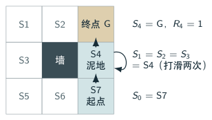
图中是三乘三的泥地，中间一格是墙。策略始终向上：从起点 S7 一步进入泥地 S4，在 S4 每次只有一成机会进入终点 G。右侧把格子编号与时间下标对上：S 0 = S 7 S_0=\mathrm{S7} S 0 = S7 S 1 = S 2 = S 3 = S 4 S_1=S_2=S_3=\mathrm{S4} S 1 = S 2 = S 3 = S4 S 4 = G S_4=\mathrm{G} S 4 = G R 4 = 1 R_4=1 R 4 = 1
真实价值为 v π ( S 4 ) = 10 / 19 ≈ . 5263 v_\pi(\mathrm{S4})=10/19\approx.5263 v π ( S4 ) = 10/19 ≈ .5263 v π ( S 7 ) = . 9 v π ( S 4 ) = 9 / 19 ≈ . 4737 v_\pi(\mathrm{S7})=.9\,v_\pi(\mathrm{S4})=9/19\approx.4737 v π ( S7 ) = .9 v π ( S4 ) = 9/19 ≈ .4737 V ( S 7 ) = . 4 V(\mathrm{S7})=.4 V ( S7 ) = .4 V ( S 4 ) = . 5 V(\mathrm{S4})=.5 V ( S4 ) = .5
先在这条回合上比较两种方法，估计表暂取全 0 0 0 . 2 .2 .2 0 0 0 0 0 0 V ( S 4 ) = . 2 V(\mathrm{S4})=.2 V ( S4 ) = .2 V ( S 7 ) V(\mathrm{S7}) V ( S7 ) 0 0 0 . 9 3 = . 729 .9^3=.729 . 9 3 = .729 V ( S 7 ) V(\mathrm{S7}) V ( S7 ) . 2 × . 729 ≈ . 146 .2\times.729\approx.146 .2 × .729 ≈ .146 . 9 .9 .9
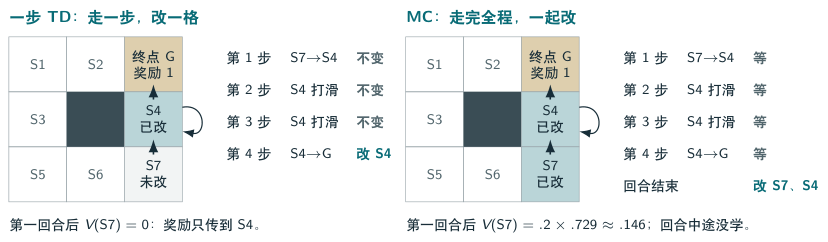
两半是同一个回合，估计表初值全为 0。左半是一步 TD，逐步列出每一步改了哪一格：前三步不改，第四步只改 S4，起点 S7 没有变。右半是 MC：回合结束后一起改 S7 与 S4，回合中途没有学。一步 TD 传得慢，MC 要等到终止。
两种方法的差别可以归到一个问题上：自举之前看多远。一步 TD 收一个奖励就查下一格的估计；MC 一直等到终止，不查表。先收几个实得奖励再查表，两端之间就有一串中间方案。目标末尾查表的那一项叫尾值（tail value），它前面的折扣系数叫尾值系数；看得越远，写入越晚，尾值系数越小。在泥地的 S7 上，用冻结的 V ( S 4 ) = . 5 V(\mathrm{S4})=.5 V ( S4 ) = .5 . 45 .45 .45 . 3645 .3645 .3645
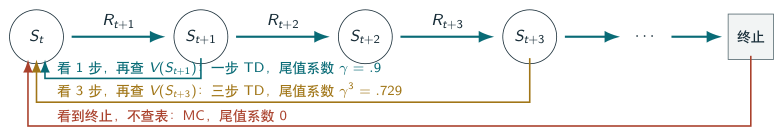
横向是一段轨迹，三条回指的箭头都更新同一次访问 S t S_t S t V ( S t + 1 ) V(S_{t+1}) V ( S t + 1 ) γ \gamma γ V ( S t + 3 ) V(S_{t+3}) V ( S t + 3 ) γ 3 \gamma^3 γ 3
深度可以选以后，一步 TD 的两条性质不再成立：每走一步就能写入，尾值误差以固定系数 γ \gamma γ
不同意见 把一步 TD 与 MC 放在一条看多远的轴上，是 Sutton 与 Barto 的讲法。另一种看法按误差来源区分两者：MC 的误差主要来自方差，TD 的误差主要来自所依赖估计的偏差。这两种误差也可以用基线、控制变量等办法分别减小，不必改变深度。中间方案也不总比两端好：下一状态的估计已经很准时，一步目标的方差最小，多收奖励只添噪声；估计很差而回合很短时，直接用 MC 也不贵。
问题设定 给定有限 MDP，p p p r r r 0 ≤ γ ≤ 1 0\le\gamma\le1 0 ≤ γ ≤ 1 π \pi π S 0 , A 0 , R 1 , S 1 , … , S T S_0,A_0,R_1,S_1,\dots,S_T S 0 , A 0 , R 1 , S 1 , … , S T V V V v π ( s ) = E π [ G t ∣ S t = s ] v_\pi(s)=\mathbb E_\pi[G_t\mid S_t=s] v π ( s ) = E π [ G t ∣ S t = s ] q π q_\pi q π 自举之前看多远 。一步目标只等一步，但尾值误差几乎原样进入目标；MC 目标没有尾值误差，但要等到终止，方差也大。
下表按“方法—解决的困难—留下的困难”排列各节，留下的困难由下一行处理。
节
方法
解决的困难
留下的困难
7.1
n n n G t : t + n G_{t:t+n} G t : t + n 在一步与 MC 之间取中间深度，尾值误差系数降为 γ n \gamma^n γ n
要等 n n n S t S_t S t
7.2
λ \lambda λ 把所有深度按几何权重混合成一个目标，只用一个参数
前向目标要等到回合末才算得出，要存整条轨迹
7.3
资格迹（累积、Dutch、替换）
每步把新误差按迹分给早先访问；冻结表时总量等于 λ \lambda λ
后向迹等于前向目标，只在冻结表、回合末写入时成立
7.4
真在线 TD(λ \lambda λ λ \lambda λ
在线改表时仍与在线前向参照逐步相等
只预测固定策略，不比较动作
7.5
Sarsa(λ \lambda λ
迹放到 ( s , a ) (s,a) ( s , a )
比率乘积的方差随路径增大
全章
—
—
按到达顺序处理转移，不保存经验（第 8 章）；每个状态存一个数，状态多时迹要记到参数上（第 9 章 9.6 节）
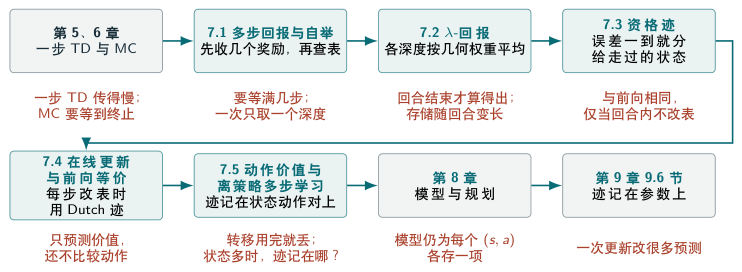
从左上的第 5、6 章出发，箭头依次经过 7.1–7.5 节，通向第 8 章与第 9 章 9.6 节；方框里是该节的方法，框下红字是它留下、由下一节处理的困难。
教材（Sutton 与 Barto 第 7、12 章）讲到 n n n λ \lambda λ λ \lambda λ λ \lambda λ
7.1 多步回报与自举课件
n n n n n n n n n T T T V V V k : k + n k:k+n k : k + n k k k k + n k+n k + n
G k : k + n = ∑ i = 1 min ( n , T − k ) γ i − 1 R k + i + { γ n V ( S k + n ) , k + n < T , 0 , k + n ≥ T . G_{k:k+n}=\sum_{i=1}^{\min(n,T-k)}\gamma^{i-1}R_{k+i}
+\begin{cases}\gamma^n V(S_{k+n}),&k+n<T,\\0,&k+n\ge T.\end{cases} G k : k + n = i = 1 ∑ m i n ( n , T − k ) γ i − 1 R k + i + { γ n V ( S k + n ) , 0 , k + n < T , k + n ≥ T .
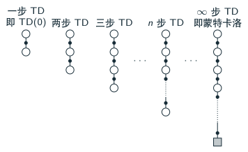
从左到右五列依次是一步（即 TD(0)）、两步、三步、n n n ∞ \infty ∞
从同一次 S7 访问出发，若 V ( S 4 ) = . 5 V(\mathrm{S4})=.5 V ( S4 ) = .5 . 9 ( . 5 ) = . 45 .9(.5)=.45 .9 ( .5 ) = .45 . 9 3 ( 1 ) = . 729 .9^3(1)=.729 . 9 3 ( 1 ) = .729 v π ( S 7 ) v_\pi(\mathrm{S7}) v π ( S7 )
若回合在第 n n n n ≥ 4 n\ge4 n ≥ 4 G 0 : n = G 0 = . 729 G_{0:n}=G_0=.729 G 0 : n = G 0 = .729 t + n t+n t + n G t : t + n G_{t:t+n} G t : t + n V t + n − 1 ( S t + n ) V_{t+n-1}(S_{t+n}) V t + n − 1 ( S t + n )
不同意见 n n n n n n π \pi π
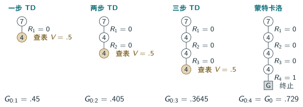
四列从左到右是一步、两步、三步目标与完整回报，都用于更新起点 S7；圆中的 7、4 是格子编号，方框标出查表的位置（V ( S 4 ) = . 5 V(\mathrm{S4})=.5 V ( S4 ) = .5 多看一步，查表的位置就后移一步；第四列已见到终点奖励，不再查表。四个目标依次为 . 45 .45 .45 . 405 .405 .405 . 3645 .3645 .3645 . 729 .729 .729
等待时间与尾值误差
先在泥地上看一个具体的量：固定 V ( S 4 ) = . 5 V(\mathrm{S4})=.5 V ( S4 ) = .5 n n n G 0 : n G_{0:n} G 0 : n n n n
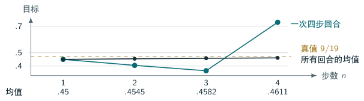
横轴是步数 n n n n n n 9 / 19 9/19 9/19 n n n
沿 S 7 , S 4 , S 4 , S 4 , G \mathrm{S7},\mathrm{S4},\mathrm{S4},\mathrm{S4},\mathrm{G} S7 , S4 , S4 , S4 , G . 45 .45 .45 . 405 .405 .405 . 3645 .3645 .3645 . 729 .729 .729 . 9 .9 .9 . 729 .729 .729 . 1 .1 .1 n n n . 9 n − 1 .9^{n-1} . 9 n − 1 V ( S 4 ) V(\mathrm{S4}) V ( S4 ) n n n
v π ( S 7 ) + . 9 n ⋅ . 9 n − 1 [ V ( S 4 ) − v π ( S 4 ) ] . v_\pi(\mathrm{S7})+.9^n\cdot.9^{n-1}\bigl[V(\mathrm{S4})-v_\pi(\mathrm{S4})\bigr]. v π ( S7 ) + . 9 n ⋅ . 9 n − 1 [ V ( S4 ) − v π ( S4 ) ] .
代入 V ( S 4 ) − v π ( S 4 ) = . 5 − 10 / 19 ≈ − . 0263 V(\mathrm{S4})-v_\pi(\mathrm{S4})=.5-10/19\approx-.0263 V ( S4 ) − v π ( S4 ) = .5 − 10/19 ≈ − .0263 n = 1 n=1 n = 1 4 4 4 . 45 .45 .45 . 4545 .4545 .4545 . 4582 .4582 .4582 . 4611 .4611 .4611 . 0237 .0237 .0237 . 0192 .0192 .0192 . 0155 .0155 .0155 . 0126 .0126 .0126 . 81 .81 .81 . 9 .9 .9 γ \gamma γ . 9 .9 .9
n n n π \pi π V V V 0 0 0 ∥ f ∥ ∞ = max s ∣ f ( s ) ∣ \lVert f\rVert_\infty=\max_s|f(s)| ∥ f ∥ ∞ = max s ∣ f ( s ) ∣ ∣ f ∣ |f| ∣ f ∣
max s ∣ E π [ G k : k + n ∣ S k = s ] − v π ( s ) ∣ ≤ γ n ∥ V − v π ∥ ∞ . \max_s\bigl|\mathbb E_\pi[G_{k:k+n}\mid S_k=s]-v_\pi(s)\bigr|\le\gamma^n\lVert V-v_\pi\rVert_\infty . s max E π [ G k : k + n ∣ S k = s ] − v π ( s ) ≤ γ n ∥ V − v π ∥ ∞ .
这个结论说，价值表冻结时，n n n γ n \gamma^n γ n
① 回报的定义逐项展开 n n n G k = ∑ i = 1 n γ i − 1 R k + i + γ n G k + n G_k=\sum_{i=1}^{n}\gamma^{i-1}R_{k+i}+\gamma^nG_{k+n} G k = ∑ i = 1 n γ i − 1 R k + i + γ n G k + n
② 在同一路径上与 n n n n n n G k : k + n − G k = γ n [ V ( S k + n ) − G k + n ] G_{k:k+n}-G_k=\gamma^n[V(S_{k+n})-G_{k+n}] G k : k + n − G k = γ n [ V ( S k + n ) − G k + n ]
③ 马尔可夫性加上 π \pi π E π [ G k + n ∣ S k + n ] = v π ( S k + n ) \mathbb E_\pi[G_{k+n}\mid S_{k+n}]=v_\pi(S_{k+n}) E π [ G k + n ∣ S k + n ] = v π ( S k + n )
④ 对 ② 取条件期望并代入 ③，又因 E π [ G k ∣ S k = s ] = v π ( s ) \mathbb E_\pi[G_k\mid S_k=s]=v_\pi(s) E π [ G k ∣ S k = s ] = v π ( s )
E π [ G k : k + n ∣ S k = s ] − v π ( s ) = γ n E π [ ( V − v π ) ( S k + n ) ∣ S k = s ] . \mathbb E_\pi[G_{k:k+n}\mid S_k=s]-v_\pi(s)
=\gamma^n\mathbb E_\pi[(V-v_\pi)(S_{k+n})\mid S_k=s]. E π [ G k : k + n ∣ S k = s ] − v π ( s ) = γ n E π [( V − v π ) ( S k + n ) ∣ S k = s ] .
⑤ 期望不超过最大绝对值，∣ E [ f ( S k + n ) ∣ S k = s ] ∣ ≤ ∥ f ∥ ∞ |\mathbb E[f(S_{k+n})\mid S_k=s]|\le\lVert f\rVert_\infty ∣ E [ f ( S k + n ) ∣ S k = s ] ∣ ≤ ∥ f ∥ ∞
④ 是等式，⑤ 才是上界。在 γ < 1 \gamma<1 γ < 1 n n n n n n V ( S 7 ) = . 4 V(\mathrm{S7})=.4 V ( S7 ) = .4 V ( S 4 ) = . 5 V(\mathrm{S4})=.5 V ( S4 ) = .5 9 / 19 9/19 9/19 10 / 19 10/19 10/19 ∥ V − v π ∥ ∞ = . 0737 \lVert V-v_\pi\rVert_\infty=.0737 ∥ V − v π ∥ ∞ = .0737 n = 1 n=1 n = 1 4 4 4 . 066 .066 .066 . 060 .060 .060 . 054 .054 .054 . 048 .048 .048 . 0237 .0237 .0237 . 0192 .0192 .0192 . 0155 .0155 .0155 . 0126 .0126 .0126
界只管均值，不管单次目标。单份目标的均方误差可以拆成两部分：
E π [ ( G k : k + n − v π ( s ) ) 2 ∣ S k = s ] = Var π [ G k : k + n ∣ S k = s ] + b 2 , \mathbb E_\pi\bigl[(G_{k:k+n}-v_\pi(s))^2\mid S_k=s\bigr]=\operatorname{Var}_\pi[G_{k:k+n}\mid S_k=s]+b^2, E π [ ( G k : k + n − v π ( s ) ) 2 ∣ S k = s ] = Var π [ G k : k + n ∣ S k = s ] + b 2 ,
其中方差 Var \operatorname{Var} Var b = E π [ G k : k + n ∣ S k = s ] − v π ( s ) b=\mathbb E_\pi[G_{k:k+n}\mid S_k=s]-v_\pi(s) b = E π [ G k : k + n ∣ S k = s ] − v π ( s ) n n n b b b
不同意见 误差界只用最大误差 ∥ V − v π ∥ ∞ \lVert V-v_\pi\rVert_\infty ∥ V − v π ∥ ∞ γ n \gamma^n γ n
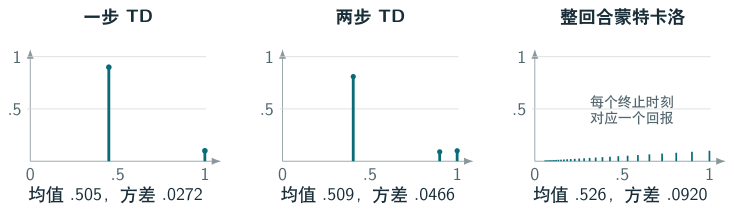
三幅图都从 S4 出发、向上走，依次是一步目标、两步目标和整回合的蒙特卡洛回报。横轴是目标可能取的值，每根竖线的高度是取到这个值的概率。一步目标的概率集中在 .45 与 1 两处；两步目标多出 .9；蒙特卡洛回报按终止时刻散成一排细线。三者均值依次约为 .505、.509、.526，方差依次约为 .0272、.0466、.0920：目标越长，均值越接近真值 10 / 19 10/19 10/19
在 S4 上，目标越长，均值越接近真值，方差也越大。泥地的真实价值是 v π ( S 4 ) = 10 / 19 v_\pi(\mathrm{S4})=10/19 v π ( S4 ) = 10/19
这些数可以逐项写出。一步目标：以 . 1 .1 .1 1 1 1 . 9 .9 .9 . 9 ( . 5 ) = . 45 .9(.5)=.45 .9 ( .5 ) = .45 1 1 1 . 1 .1 .1 . 9 .9 .9 . 09 .09 .09 . 9 2 ( . 5 ) = . 405 .9^2(.5)=.405 . 9 2 ( .5 ) = .405 . 81 .81 .81 k k k . 9 k − 1 .9^{k-1} . 9 k − 1 . 1 ( . 9 ) k − 1 .1(.9)^{k-1} .1 ( .9 ) k − 1 10 / 19 ≈ . 526 10/19\approx.526 10/19 ≈ .526 . 0920 .0920 .0920 . 2 .2 .2 . 2 ( 1 ) + . 8 ( . 45 ) = . 560 .2(1)+.8(.45)=.560 .2 ( 1 ) + .8 ( .45 ) = .560
不同意见 这里的方差全部来自终止时刻。奖励本身带噪声，或状态的分支很多时，方差随 n n n
易错 误差界只约束目标的均值，不约束单次目标，也推不出 n n n n n n V t + n − 1 V_{t+n-1} V t + n − 1
多步更新的执行时刻
t → t + 1 t\to t+1 t → t + 1 τ = t − n + 1 ≥ 0 \tau=t-n+1\ge0 τ = t − n + 1 ≥ 0 S τ S_\tau S τ n n n V ( S τ ) V(S_\tau) V ( S τ ) α \alpha α h < n h<n h < n γ h V ( S τ + h ) \gamma^h V(S_{\tau+h}) γ h V ( S τ + h )
算法 7.1 沿策略 π \pi π V V V n n n
输入：策略 π \pi π n ≥ 1 n\ge1 n ≥ 1 γ \gamma γ α \alpha α V V V
每一回合从非终止状态 S 0 S_0 S 0 S 0 S_0 S 0 T ← ∞ T\gets\infty T ← ∞
对 t = 0 , 1 , 2 , … t=0,1,2,\dots t = 0 , 1 , 2 , …
若 t < T t<T t < T A t ∼ π ( ⋅ ∣ S t ) A_t\sim\pi(\cdot\mid S_t) A t ∼ π ( ⋅ ∣ S t ) R t + 1 R_{t+1} R t + 1 S t + 1 S_{t+1} S t + 1
若 t < T t<T t < T S t + 1 S_{t+1} S t + 1 T ← t + 1 T\gets t+1 T ← t + 1
τ ← t + 1 − n \tau\gets t+1-n τ ← t + 1 − n τ ≥ 0 \tau\ge0 τ ≥ 0 h ← min ( τ + n , T ) h\gets\min(\tau+n,T) h ← min ( τ + n , T ) G ← ∑ i = τ + 1 h γ i − τ − 1 R i G\gets\sum_{i=\tau+1}^{h}\gamma^{i-\tau-1}R_i G ← ∑ i = τ + 1 h γ i − τ − 1 R i 若 h < T h<T h < T G ← G + γ n V ( S h ) G\gets G+\gamma^nV(S_h) G ← G + γ n V ( S h )
V ( S τ ) ← V ( S τ ) + α [ G − V ( S τ ) ] V(S_\tau)\gets V(S_\tau)+\alpha[G-V(S_\tau)] V ( S τ ) ← V ( S τ ) + α [ G − V ( S τ )] 若 τ = T − 1 \tau=T-1 τ = T − 1
第 6 行的和包含最后一个奖励 R T R_T R T τ = T − 1 \tau=T-1 τ = T − 1 t = T t=T t = T n + 1 n+1 n + 1 n + 1 n+1 n + 1
下表把泥地这一回合 S 7 → S 4 → S 4 → S 4 → G \mathrm{S7}\to\mathrm{S4}\to\mathrm{S4}\to\mathrm{S4}\to\mathrm{G} S7 → S4 → S4 → S4 → G n = 3 n=3 n = 3 α = . 2 \alpha=.2 α = .2 V ( S 7 ) = . 4 V(\mathrm{S7})=.4 V ( S7 ) = .4 V ( S 4 ) = . 5 V(\mathrm{S4})=.5 V ( S4 ) = .5 n = 3 n=3 n = 3 τ \tau τ t = 0 , 1 t=0,1 t = 0 , 1 t = 2 t=2 t = 2 S 0 S_0 S 0 S 3 S_3 S 3 S 3 S_3 S 3 . 9 3 × . 5 = . 3645 .9^3\times.5=.3645 . 9 3 × .5 = .3645 V ( S 7 ) V(\mathrm{S7}) V ( S7 ) . 4 .4 .4 . 4 + . 2 ( . 3645 − . 4 ) = . 3929 .4+.2(.3645-.4)=.3929 .4 + .2 ( .3645 − .4 ) = .3929 t = 3 t=3 t = 3 . 81 .81 .81 τ = 2 \tau=2 τ = 2 3 3 3
算法时钟 t t t
新转移
被更新的访问 τ \tau τ
目标
更新后的值
0, 1
收到前两步
等待
—
不变
2
第 3 步：S4→S4
0：S7
. 9 3 ( . 5 ) = . 3645 .9^3(.5)=.3645 . 9 3 ( .5 ) = .3645 . 3929 .3929 .3929
3
第 4 步：S4→G
1：S4
. 9 2 = . 81 .9^2=.81 . 9 2 = .81 . 562 .562 .562
4
补完
2：S4
. 9 .9 .9 . 6296 .6296 .6296
5
补完
3：S4
1 1 1 . 70368 .70368 .70368
若 n = 6 n=6 n = 6 5 5 5 8 8 8 4 4 4
不同意见 在有回合的任务里，回合末补完剩余更新是自然的做法。7.3 节的后向（迹）形式不用缓存，也不推迟，但只在表冻结时与这里的前向目标完全一致（7.3、7.4 节）。
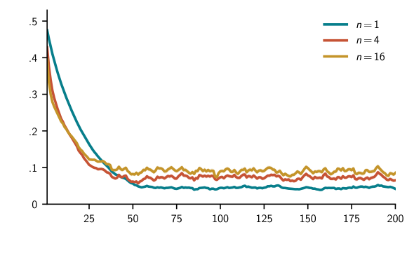
泥地固定策略预测，固定步长 α = . 05 \alpha=.05 α = .05 n = 1 , 4 , 16 n=1,4,16 n = 1 , 4 , 16
第 10 回合，n = 1 n=1 n = 1 . 316 .316 .316 n = 4 n=4 n = 4 . 225 .225 .225 n = 16 n=16 n = 16 . 220 .220 .220 n = 1 n=1 n = 1 . 042 .042 .042 n = 4 n=4 n = 4 . 065 .065 .065 n = 16 n=16 n = 16 . 085 .085 .085
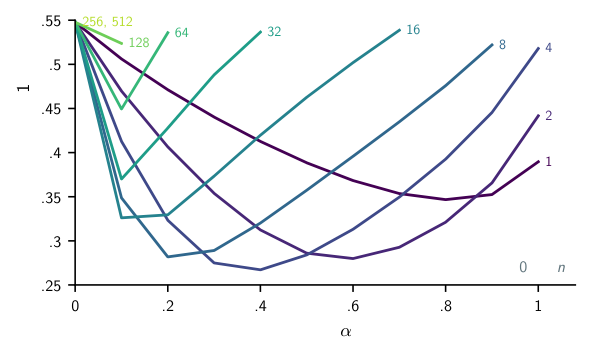
每条曲线固定一个 n n n α \alpha α − 1 -1 − 1 + 1 +1 + 1 γ = 1 \gamma=1 γ = 1 n n n
各 n n n n = 1 n=1 n = 1 . 347 .347 .347 α = . 8 \alpha=.8 α = .8 n = 2 n=2 n = 2 . 280 .280 .280 n = 4 n=4 n = 4 . 267 .267 .267 α = . 4 \alpha=.4 α = .4 n = 8 n=8 n = 8 . 282 .282 .282 n = 16 n=16 n = 16 . 326 .326 .326 n n n α \alpha α
两幅图的任务和误差统计都不同：前者是泥地上逐回合的误差，后者是随机游走上前 10 回合的平均误差。曲线只能在各自图内比较，两者都给不出对所有任务适用的 n n n n n n
不同意见 n n n γ n \gamma^n γ n n n n n n n n n n n n n n n n n n n
7.2 λ \lambda λ 课件
7.1 节留下三件事：n n n n n n γ n \gamma^n γ n n n n n n n
复合回报 从 S t S_t S t L = T − t L=T-t L = T − t ω 1 , … , ω L ≥ 0 \omega_1,\dots,\omega_L\ge0 ω 1 , … , ω L ≥ 0 ∑ n ω n = 1 \sum_n\omega_n=1 ∑ n ω n = 1
G t ω = ∑ n = 1 L ω n G t : t + n , G t : t + L = G t . G_t^{\boldsymbol\omega}=\sum_{n=1}^{L}\omega_nG_{t:t+n},\qquad G_{t:t+L}=G_t. G t ω = n = 1 ∑ L ω n G t : t + n , G t : t + L = G t .
若尾值用真值 v π v_\pi v π G t : t + n G_{t:t+n} G t : t + n v π ( S t ) v_\pi(S_t) v π ( S t ) v π ( S t ) v_\pi(S_t) v π ( S t ) n n n γ n ε \gamma^n\varepsilon γ n ε G t G_t G t max s ∣ V ( s ) − v π ( s ) ∣ ≤ ε \max_s|V(s)-v_\pi(s)|\le\varepsilon max s ∣ V ( s ) − v π ( s ) ∣ ≤ ε ∣ E π [ G t ω ∣ S t ] − v π ( S t ) ∣ ≤ c ω ε |\mathbb E_\pi[G_t^{\boldsymbol\omega}\mid S_t]-v_\pi(S_t)|\le c_{\boldsymbol\omega}\varepsilon ∣ E π [ G t ω ∣ S t ] − v π ( S t ) ∣ ≤ c ω ε c ω = ∑ n < L ω n γ n c_{\boldsymbol\omega}=\sum_{n<L}\omega_n\gamma^n c ω = ∑ n < L ω n γ n n = 3 n=3 n = 3 . 3645 .3645 .3645 c ω = . 729 c_{\boldsymbol\omega}=.729 c ω = .729 n = 1 n=1 n = 1 n = 3 n=3 n = 3 . 40725 .40725 .40725 c ω = . 8145 c_{\boldsymbol\omega}=.8145 c ω = .8145 λ = . 8 \lambda=.8 λ = .8 . 2 .2 .2 . 16 .16 .16 . 128 .128 .128 . 512 .512 .512 . 574704 .574704 .574704 c ω = . 2 ( . 9 ) + . 16 ( . 81 ) + . 128 ( . 729 ) = . 402912 c_{\boldsymbol\omega}=.2(.9)+.16(.81)+.128(.729)=.402912 c ω = .2 ( .9 ) + .16 ( .81 ) + .128 ( .729 ) = .402912
不同意见 把选 n n n n n n
固定一次访问 S k S_k S k 1 − λ 1-\lambda 1 − λ L = T − k L=T-k L = T − k λ \lambda λ
G k λ = ( 1 − λ ) ∑ n = 1 L − 1 λ n − 1 G k : k + n + λ L − 1 G k . G_k^\lambda=(1-\lambda)\sum_{n=1}^{L-1}\lambda^{n-1}G_{k:k+n}+\lambda^{L-1}G_k. G k λ = ( 1 − λ ) n = 1 ∑ L − 1 λ n − 1 G k : k + n + λ L − 1 G k .
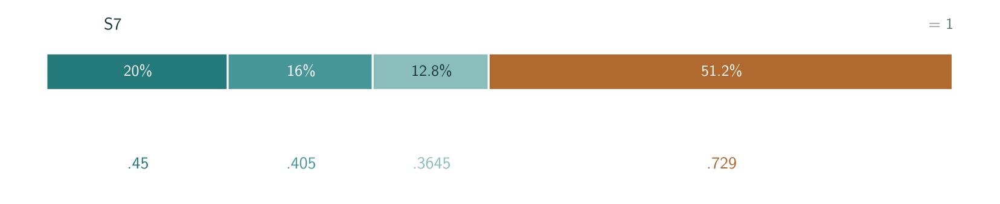
颜色区间的宽度是权重。每个区间下方的数字是从同一次 S7 访问起算的回报。
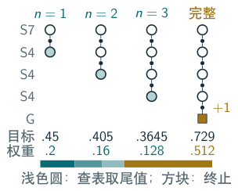
泥地上同一次 S7 访问的 λ \lambda λ λ = . 8 \lambda=.8 λ = .8 1 − λ 1-\lambda 1 − λ
λ = 0 \lambda=0 λ = 0 λ = 1 \lambda=1 λ = 1 λ = . 8 \lambda=.8 λ = .8 . 2 , . 16 , . 128 .2,.16,.128 .2 , .16 , .128 . 512 .512 .512 . 45 , . 405 , . 3645 , . 729 .45,.405,.3645,.729 .45 , .405 , .3645 , .729 G 0 λ = . 574704 G_0^\lambda=.574704 G 0 λ = .574704
易错 λ \lambda λ γ \gamma γ v π v_\pi v π λ \lambda λ λ = 1 \lambda=1 λ = 1 γ = . 9 \gamma=.9 γ = .9
λ \lambda λ 把权重想成一桶水。从 S7 出发时桶里有 1 1 1 1 1 1 G 0 : 1 = . 9 × . 5 = . 45 G_{0:1}=.9\times.5=.45 G 0 : 1 = .9 × .5 = .45 1 − λ = 20 % 1-\lambda=20\% 1 − λ = 20% . 8 .8 .8 2 2 2 . 16 .16 .16 3 3 3 . 128 .128 .128 4 4 4 λ 3 = . 512 \lambda^3=.512 λ 3 = .512 G 0 = . 729 G_0=.729 G 0 = .729
深度
留下的水
目标
贡献
1 1 1 . 2 .2 .2 G 0 : 1 = . 45 G_{0:1}=.45 G 0 : 1 = .45 . 09 .09 .09
2 2 2 . 16 .16 .16 G 0 : 2 = . 405 G_{0:2}=.405 G 0 : 2 = .405 . 0648 .0648 .0648
3 3 3 . 128 .128 .128 G 0 : 3 = . 3645 G_{0:3}=.3645 G 0 : 3 = .3645 . 046656 .046656 .046656
终点
. 512 .512 .512 G 0 = . 729 G_0=.729 G 0 = .729 . 373248 .373248 .373248
合计
1 1 1 G 0 λ = . 574704 G_0^\lambda=.574704 G 0 λ = .574704
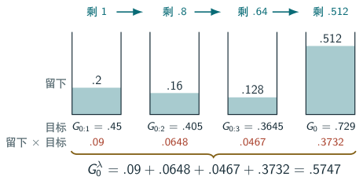
四只桶从左到右是深度 1、2、3 与终点。每只桶留下剩余水量的 1 − λ = . 2 1-\lambda=.2 1 − λ = .2 G 0 λ = . 5747 G_0^\lambda=.5747 G 0 λ = .5747
水最后都有去处，所以权重和为 1 1 1 λ = 0 \lambda=0 λ = 0 . 45 .45 .45 λ = 1 \lambda=1 λ = 1 . 729 .729 .729 2.952 2.952 2.952 ∑ n n ( 1 − λ ) λ n − 1 = 1 / ( 1 − λ ) \sum_n n(1-\lambda)\lambda^{n-1}=1/(1-\lambda) ∑ n n ( 1 − λ ) λ n − 1 = 1/ ( 1 − λ ) λ = . 8 \lambda=.8 λ = .8 5 5 5 λ = . 9 \lambda=.9 λ = .9 10 10 10 V ( S 7 ) = . 4 V(\mathrm{S7})=.4 V ( S7 ) = .4 . 174704 .174704 .174704 α × . 174704 \alpha\times.174704 α × .174704
柱是各深度分到的权重，最后一根红柱是终点拿到的余量 λ L − 1 \lambda^{L-1} λ L − 1 G λ G^\lambda G λ . 574704 .574704 .574704 . 09 + . 0648 + . 046656 + . 373248 .09+.0648+.046656+.373248 .09 + .0648 + .046656 + .373248 λ \lambda λ . 45 .45 .45 . 729 .729 .729 k k k G t λ = R t + 1 + γ [ ( 1 − λ ) V ( S t + 1 ) + λ G t + 1 λ ] G_t^\lambda=R_{t+1}+\gamma[(1-\lambda)V(S_{t+1})+\lambda G_{t+1}^\lambda] G t λ = R t + 1 + γ [( 1 − λ ) V ( S t + 1 ) + λ G t + 1 λ ]
不同意见 一种看法认为几何权重只是计算上的方便：它恰好能写成每步乘一次 γ λ \gamma\lambda γλ λ \lambda λ
为什么取几何权重课件
几何权重 ω n = ( 1 − λ ) λ n − 1 \omega_n=(1-\lambda)\lambda^{n-1} ω n = ( 1 − λ ) λ n − 1 λ \lambda λ λ \lambda λ
G t λ = R t + 1 + γ [ ( 1 − λ ) V ( S t + 1 ) + λ G t + 1 λ ] , G T − 1 λ = R T . G_t^\lambda=R_{t+1}+\gamma\bigl[(1-\lambda)V(S_{t+1})+\lambda G_{t+1}^\lambda\bigr],\qquad G_{T-1}^\lambda=R_T. G t λ = R t + 1 + γ [ ( 1 − λ ) V ( S t + 1 ) + λ G t + 1 λ ] , G T − 1 λ = R T .
泥地从终点倒推：G 3 λ = 1 G_3^\lambda=1 G 3 λ = 1 G 2 λ = . 9 ( . 1 + . 8 ) = . 81 G_2^\lambda=.9(.1+.8)=.81 G 2 λ = .9 ( .1 + .8 ) = .81 G 1 λ = . 9 ( . 1 + . 648 ) = . 6732 G_1^\lambda=.9(.1+.648)=.6732 G 1 λ = .9 ( .1 + .648 ) = .6732 G 0 λ = . 574704 G_0^\lambda=.574704 G 0 λ = .574704
另一条理由来自后向计算。冻结表时，任一复合回报都能展开成此后 TD 误差的和：记尾权 Λ j = ∑ n > j ω n \Lambda_j=\sum_{n>j}\omega_n Λ j = ∑ n > j ω n Λ 0 = 1 \Lambda_0=1 Λ 0 = 1
G k ω − V ( S k ) = ∑ j ≥ 0 γ j Λ j δ k + j . G_k^{\boldsymbol\omega}-V(S_k)=\sum_{j\ge0}\gamma^j\Lambda_j\,\delta_{k+j}. G k ω − V ( S k ) = j ≥ 0 ∑ γ j Λ j δ k + j .
若每个状态只存一个数、每步乘同一个常数 β \beta β k k k δ k + j \delta_{k+j} δ k + j β j \beta^j β j γ j Λ j = β j \gamma^j\Lambda_j=\beta^j γ j Λ j = β j Λ j = λ j \Lambda_j=\lambda^j Λ j = λ j λ = β / γ \lambda=\beta/\gamma λ = β / γ ω n = ( 1 − λ ) λ n − 1 \omega_n=(1-\lambda)\lambda^{n-1} ω n = ( 1 − λ ) λ n − 1 n n n 1 { j < n } \mathbf 1\{j<n\} 1 { j < n } n n n n n n
λ \lambda λ λ \lambda λ c λ c_\lambda c λ n n n λ \lambda λ π \pi π
∥ E π [ G k λ ∣ S k = ⋅ ] − v π ∥ ∞ ≤ c λ ∥ V − v π ∥ ∞ , c λ = ∑ n ≥ 1 ( 1 − λ ) λ n − 1 γ n = ( 1 − λ ) γ 1 − γ λ . \bigl\lVert\mathbb E_\pi[G_k^\lambda\mid S_k=\cdot]-v_\pi\bigr\rVert_\infty\le c_\lambda\lVert V-v_\pi\rVert_\infty,\qquad
c_\lambda=\sum_{n\ge1}(1-\lambda)\lambda^{n-1}\gamma^n=\frac{(1-\lambda)\gamma}{1-\gamma\lambda}. E π [ G k λ ∣ S k = ⋅ ] − v π ∞ ≤ c λ ∥ V − v π ∥ ∞ , c λ = n ≥ 1 ∑ ( 1 − λ ) λ n − 1 γ n = 1 − γλ ( 1 − λ ) γ .
这个界分三步得到。① 把终点余下的权重并进实际回报 G k G_k G k G k λ G_k^\lambda G k λ n n n v π v_\pi v π γ n ∥ V − v π ∥ ∞ \gamma^n\lVert V-v_\pi\rVert_\infty γ n ∥ V − v π ∥ ∞ ( 1 − λ ) λ n − 1 (1-\lambda)\lambda^{n-1} ( 1 − λ ) λ n − 1 γ λ < 1 \gamma\lambda<1 γλ < 1 c λ c_\lambda c λ λ < 1 \lambda<1 λ < 1 λ = 1 \lambda=1 λ = 1 ( 1 − λ ) λ n − 1 (1-\lambda)\lambda^{n-1} ( 1 − λ ) λ n − 1 G k G_k G k v π v_\pi v π c 1 = 0 c_1=0 c 1 = 0 γ < 1 \gamma<1 γ < 1 c λ c_\lambda c λ λ → 1 \lambda\to1 λ → 1
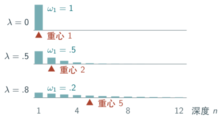
三行分别是 λ = 0 \lambda=0 λ = 0 . 5 .5 .5 . 8 .8 .8 n n n 1 / ( 1 − λ ) 1/(1-\lambda) 1/ ( 1 − λ ) λ \lambda λ
λ \lambda λ 0 0 0 1 1 1 c λ c_\lambda c λ γ \gamma γ 0 0 0 λ \lambda λ n n n λ = . 8 \lambda=.8 λ = .8 5 5 5 5 5 5 . 9 5 ≈ . 590 .9^5\approx.590 . 9 5 ≈ .590 c . 8 c_{.8} c .8 . 643 .643 .643 . 2 .2 .2 λ \lambda λ （γ = . 9 \gamma=.9 γ = .9
λ \lambda λ 重心 1 / ( 1 − λ ) 1/(1-\lambda) 1/ ( 1 − λ )
重心处 γ n \gamma^n γ n
c λ c_\lambda c λ
0
1
.900
.900
.5
2
.810
.818
.8
5
.590
.643
.9
10
.349
.474
γ n \gamma^n γ n n n n c λ c_\lambda c λ γ n \gamma^n γ n
不同意见 c λ c_\lambda c λ c λ c_\lambda c λ
下表对泥地从 S7 出发的 G 0 λ G_0^\lambda G 0 λ V ( S 4 ) V(\mathrm{S4}) V ( S4 ) = = = 2 + ^2+ 2 +
λ \lambda λ c λ c_\lambda c λ V ( S 4 ) = . 5 V(\mathrm{S4})=.5 V ( S4 ) = .5 方差
均方误差
V ( S 4 ) = . 3 V(\mathrm{S4})=.3 V ( S4 ) = .3 方差
均方误差
V ( S 4 ) = 0 V(\mathrm{S4})=0 V ( S4 ) = 0 方差
均方误差
0
.900
− . 0237 -.0237 − .0237 0
.0006 − . 2037 -.2037 − .2037 0
.0415
− . 4737 -.4737 − .4737 0
.2244
.3
.863
− . 0219 -.0219 − .0219 .0021
.0026
− . 1883 -.1883 − .1883 .0036
.0391 − . 4380 -.4380 − .4380 .0065
.1984
.5
.818
− . 0199 -.0199 − .0199 .0066
.0070
− . 1712 -.1712 − .1712 .0108
.0401
− . 3981 -.3981 − .3981 .0190
.1775
.8
.643
− . 0135 -.0135 − .0135 .0255
.0257
− . 1157 -.1157 − .1157 .0361
.0494
− . 2691 -.2691 − .2691 .0553
.1278
.9
.474
− . 0087 -.0087 − .0087 .0413
.0414
− . 0752 -.0752 − .0752 .0522
.0578
− . 1748 -.1748 − .1748 .0709
.1014
1
0
0
.0745
.0745
0
.0745
.0745
0
.0745
.0745
尾值有误差时，均方误差在中间的 λ \lambda λ λ \lambda λ . 9 ( 1 − λ ) 1 − . 81 λ ( V ( S 4 ) − v π ( S 4 ) ) \frac{.9(1-\lambda)}{1-.81\lambda}\bigl(V(\mathrm{S4})-v_\pi(\mathrm{S4})\bigr) 1 − .81 λ .9 ( 1 − λ ) ( V ( S4 ) − v π ( S4 ) ) c λ c_\lambda c λ n n n . 9 n − 1 .9^{n-1} . 9 n − 1 λ = 0 \lambda=0 λ = 0 . 9 V ( S 4 ) .9V(\mathrm{S4}) .9 V ( S4 ) λ = 1 \lambda=1 λ = 1 . 0745 .0745 .0745 V V V . 3 .3 .3 . 0391 .0391 .0391 λ ≈ . 31 \lambda\approx.31 λ ≈ .31 n n n （V ( S 4 ) = . 5 V(\mathrm{S4})=.5 V ( S4 ) = .5 是 n = 1 , 2 , 4 , 8 n=1,2,4,8 n = 1 , 2 , 4 , 8 . 0006 , . 0224 , . 0491 , . 0691 .0006,.0224,.0491,.0691 .0006 , .0224 , .0491 , .0691
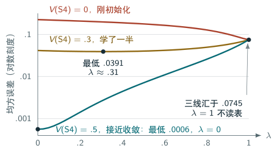
横轴是 λ \lambda λ G 0 λ G_0^\lambda G 0 λ V ( S 4 ) = 0 V(\mathrm{S4})=0 V ( S4 ) = 0 . 3 .3 .3 . 5 .5 .5 λ = 0 \lambda=0 λ = 0 . 0006 .0006 .0006 λ ≈ . 31 \lambda\approx.31 λ ≈ .31 . 0391 .0391 .0391 λ = 1 \lambda=1 λ = 1 . 0745 .0745 .0745 λ \lambda λ
偏差与方差朝相反方向变，最合适的 λ \lambda λ V ( S 4 ) V(\mathrm{S4}) V ( S4 ) . 5 .5 .5 λ = 0 \lambda=0 λ = 0 . 0006 .0006 .0006 . 3 .3 .3 λ ≈ . 31 \lambda\approx.31 λ ≈ .31 . 0391 .0391 .0391 λ = 1 \lambda=1 λ = 1 . 0745 .0745 .0745 n n n V ( S 4 ) = . 5 V(\mathrm{S4})=.5 V ( S4 ) = .5 n = 1 , 2 , 4 , 8 n=1,2,4,8 n = 1 , 2 , 4 , 8 . 0006 .0006 .0006 . 0224 .0224 .0224 . 0491 .0491 .0491 . 0691 .0691 .0691 λ \lambda λ c λ c_\lambda c λ
易错 本例方差大体随 λ \lambda λ V ( S 4 ) = 0 V(\mathrm{S4})=0 V ( S4 ) = 0 λ = . 95 \lambda=.95 λ = .95 . 0761 .0761 .0761 λ = 1 \lambda=1 λ = 1 . 0745 .0745 .0745 V V V V V V λ \lambda λ α \alpha α
本表的计算
不同意见 按尾值准不准来选 λ \lambda λ λ \lambda λ λ \lambda λ
λ \lambda λ G t λ G_t^\lambda G t λ
离线 λ \lambda λ 输入同算法 7.1，另加 λ \lambda λ
按 π \pi π V V V
令 g ← 0 g\gets0 g ← 0 u ← 0 u\gets0 u ← 0 Δ ( s ) ← 0 \Delta(s)\gets0 Δ ( s ) ← 0
对 t = T − 1 , … , 0 t=T-1,\dots,0 t = T − 1 , … , 0 g ← R t + 1 + γ [ ( 1 − λ ) u + λ g ] g\gets R_{t+1}+\gamma[(1-\lambda)u+\lambda g] g ← R t + 1 + γ [( 1 − λ ) u + λ g ] g = G t λ g=G_t^\lambda g = G t λ
同一 t t t Δ ( S t ) ← Δ ( S t ) + α [ g − V ( S t ) ] \Delta(S_t)\gets\Delta(S_t)+\alpha[g-V(S_t)] Δ ( S t ) ← Δ ( S t ) + α [ g − V ( S t )] u ← V ( S t ) u\gets V(S_t) u ← V ( S t )
回合末对各状态一次写入 V ( s ) ← V ( s ) + Δ ( s ) V(s)\gets V(s)+\Delta(s) V ( s ) ← V ( s ) + Δ ( s )
第 3、4 行里 g g g λ \lambda λ u u u G 3 λ = 1 G_3^\lambda=1 G 3 λ = 1 G 2 λ = . 81 G_2^\lambda=.81 G 2 λ = .81 G 1 λ = . 6732 G_1^\lambda=.6732 G 1 λ = .6732 G 0 λ = . 574704 G_0^\lambda=.574704 G 0 λ = .574704 λ = . 8 \lambda=.8 λ = .8 . 2 × ( . 574704 − . 4 ) = . 0349408 .2\times(.574704-.4)=.0349408 .2 × ( .574704 − .4 ) = .0349408 . 2 × ( . 1732 + . 31 + . 5 ) = . 19664 .2\times(.1732+.31+.5)=.19664 .2 × ( .1732 + .31 + .5 ) = .19664 （α = . 2 \alpha=.2 α = .2 V ( S 7 ) V(\mathrm{S7}) V ( S7 ) . 4 .4 .4 . 43494 .43494 .43494 V ( S 4 ) V(\mathrm{S4}) V ( S4 ) . 5 .5 .5 . 69664 .69664 .69664 n n n n n n n n n t + n t+n t + n
这个算法的存储随回合变长，回合结束前什么也没学到，持续任务又没有回合末。下一节把同一个和改成每步可算。
不同意见 回合末的倒推在批量硬件上很便宜，深度强化学习正是在采集到的一段序列上这样算 λ \lambda λ
7.3 资格迹课件
G k λ G_k^\lambda G k λ α [ G k λ − V ( S k ) ] = ∑ t ≥ k α ( γ λ ) t − k δ t \alpha[G_k^\lambda-V(S_k)]=\sum_{t\ge k}\alpha(\gamma\lambda)^{t-k}\delta_t α [ G k λ − V ( S k )] = ∑ t ≥ k α ( γλ ) t − k δ t δ t \delta_t δ t t t t ( γ λ ) t − k (\gamma\lambda)^{t-k} ( γλ ) t − k k k k 资格迹 。三种做法在同一个量上对照（泥地取 n = 3 n=3 n = 3
离线 λ \lambda λ
n n n TD(λ \lambda λ
访问 k k k
回合末
第 k + n − 1 k+n-1 k + n − 1
第 k k k
要保存的量
整条轨迹
最近 n n n
每状态一个迹
每步计算（表格／线性）
回合末 O ( T ) O(T) O ( T )
O ( n ) O(n) O ( n ) O ( n + d ) O(n+d) O ( n + d ) O ( ∣ S ∣ ) O(\lvert\mathcal S\rvert) O (∣ S ∣) O ( d ) O(d) O ( d )
持续任务
要人为截断
可用
可用
泥地 S7 第一次被改
转移 3 之后
转移 2 之后
转移 0 之后
重排只在冻结表时逐项相等，推导见本节后面的“误差展开”；每步改表时差在哪里，见 7.4 节。
一个新误差分给哪些状态
δ 3 = 1 + 0 − . 5 = . 5 \delta_3=1+0-.5=.5 δ 3 = 1 + 0 − .5 = .5 α δ 3 = . 1 \alpha\delta_3=.1 α δ 3 = .1 γ λ \gamma\lambda γλ
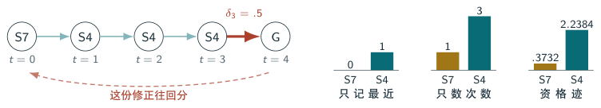
上方是泥地回合，末步误差 δ 3 = . 5 \delta_3=.5 δ 3 = .5 ( 0 , 1 ) (0,1) ( 0 , 1 ) ( 1 , 3 ) (1,3) ( 1 , 3 ) ( . 3732 , 2.2384 ) (.3732,2.2384) ( .3732 , 2.2384 )
两种视角 同一组加权误差有两种收集方式。前向视角 站在一次访问上往未来看：S7 那次访问的 λ \lambda λ δ 0 , … , δ 3 \delta_0,\dots,\delta_3 δ 0 , … , δ 3 1 1 1 . 72 .72 .72 . 5184 .5184 .5184 . 3732 .3732 .3732 . 05 − . 036 − . 0259 + . 1866 = . 1747 .05-.036-.0259+.1866=.1747 .05 − .036 − .0259 + .1866 = .1747 δ 3 \delta_3 δ 3 后向视角 站在刚到达的 TD 误差上往过去看：δ 3 = . 5 \delta_3=.5 δ 3 = .5 1 1 1 . 72 .72 .72 . 5184 .5184 .5184 2.2384 2.2384 2.2384 . 3732 .3732 .3732 . 3732 .3732 .3732 δ 3 \delta_3 δ 3 δ 3 \delta_3 δ 3 k k k δ t \delta_t δ t
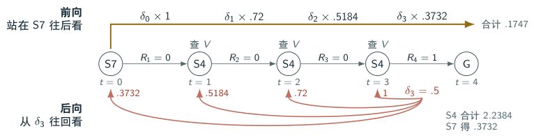
泥地回合 S7→S4→S4→S4→G 上的两种视角，只有末步奖励为 1，上下两行共用一条时间轴（冻结表，γ λ = . 72 \gamma\lambda=.72 γλ = .72 1 1 1 . 72 .72 .72 . 5184 .5184 .5184 . 3732 .3732 .3732 . 1747 .1747 .1747 δ 3 = . 5 \delta_3=.5 δ 3 = .5 2.2384 2.2384 2.2384 . 3732 .3732 .3732
不同意见 两种视角只在冻结表时逐项等价。有人因此认为前向视角才是定义，后向视角只是一种近似实现；也有人认为迹本身就有意义，例如对应神经科学里的突触标记（本章末的补充阅读），不必只看作前向目标的计算捷径。
一次访问的 λ \lambda λ ( γ λ ) j (\gamma\lambda)^j ( γλ ) j δ t = R t + 1 + γ V ( S t + 1 ) − V ( S t ) \delta_t=R_{t+1}+\gamma V(S_{t+1})-V(S_t) δ t = R t + 1 + γV ( S t + 1 ) − V ( S t ) j j j γ j \gamma^j γ j λ j \lambda^j λ j
G k λ − V ( S k ) = ∑ t = k T − 1 ( γ λ ) t − k δ t . G_k^\lambda-V(S_k)=\sum_{t=k}^{T-1}(\gamma\lambda)^{t-k}\delta_t. G k λ − V ( S k ) = t = k ∑ T − 1 ( γλ ) t − k δ t .
现在固定刚到达的 δ t \delta_t δ t k k k ( γ λ ) t − k (\gamma\lambda)^{t-k} ( γλ ) t − k 累积资格迹 。各状态的迹排成向量 e t \mathbf e_t e t e t ( s ) e_t(s) e t ( s ) s s s z t \mathbf z_t z t
e t ( s ) = ∑ k = 0 t ( γ λ ) t − k 1 { S k = s } = γ λ e t − 1 ( s ) + 1 { S t = s } , e − 1 ( s ) = 0. e_t(s)=\sum_{k=0}^{t}(\gamma\lambda)^{t-k}\mathbf1\{S_k=s\}
=\gamma\lambda e_{t-1}(s)+\mathbf1\{S_t=s\},\qquad e_{-1}(s)=0. e t ( s ) = k = 0 ∑ t ( γλ ) t − k 1 { S k = s } = γλ e t − 1 ( s ) + 1 { S t = s } , e − 1 ( s ) = 0.
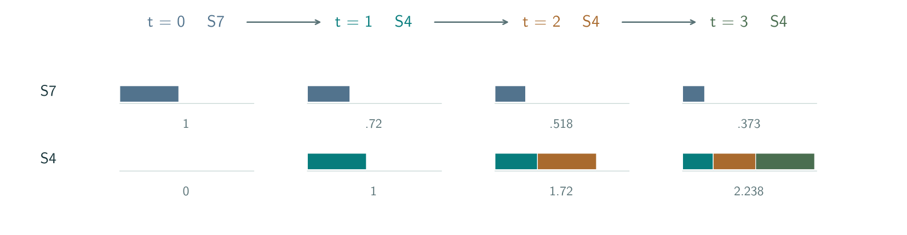
两行分别追踪 S7 与 S4，沿时间从左往右，每种颜色对应一次访问，各段长度相加就是该状态当前的迹。S7 只访问一次，色条持续缩短；S4 每次重访都添一段新的单位权重，较早的段仍在衰减。最后一列，同一终局误差 δ 3 \delta_3 δ 3 . 7 2 3 .72^3 .7 2 3 1 + . 72 + . 7 2 2 1+.72+.72^2 1 + .72 + .7 2 2
取 λ = . 8 \lambda=.8 λ = .8 . 9 × . 8 = . 72 .9\times.8=.72 .9 × .8 = .72 . 7 2 3 = . 373248 .72^3=.373248 .7 2 3 = .373248 . 7 2 2 + . 72 + 1 = 2.2384 .72^2+.72+1=2.2384 .7 2 2 + .72 + 1 = 2.2384 γ \gamma γ λ \lambda λ
迹的胶片：一回合的账本
把这一回合逐步摊开。表冻结在 V ( S 7 ) = . 4 , V ( S 4 ) = . 5 V(\mathrm{S7})=.4,V(\mathrm{S4})=.5 V ( S7 ) = .4 , V ( S4 ) = .5 α = . 2 \alpha=.2 α = .2 γ λ = . 72 \gamma\lambda=.72 γλ = .72 . 72 .72 .72 1 1 1 α δ t e t \alpha\delta_te_t α δ t e t
t t t 转移
δ t \delta_t δ t e t e_t e t 本步 α δ t e t \alpha\delta_te_t α δ t e t
累计 Δ V \Delta V Δ V
0 0 0 S7→S4
. 05 .05 .05 ( 1 , 0 ) (1,0) ( 1 , 0 ) ( . 01 , 0 ) (.01,0) ( .01 , 0 ) ( . 01 , 0 ) (.01,0) ( .01 , 0 )
1 1 1 S4→S4
− . 05 -.05 − .05 ( . 72 , 1 ) (.72,1) ( .72 , 1 ) ( − . 0072 , − . 01 ) (-.0072,-.01) ( − .0072 , − .01 ) ( . 0028 , − . 01 ) (.0028,-.01) ( .0028 , − .01 )
2 2 2 S4→S4
− . 05 -.05 − .05 ( . 5184 , 1.72 ) (.5184,1.72) ( .5184 , 1.72 ) ( − . 005184 , − . 0172 ) (-.005184,-.0172) ( − .005184 , − .0172 ) ( − . 002384 , − . 0272 ) (-.002384,-.0272) ( − .002384 , − .0272 )
3 3 3 S4→G
. 5 .5 .5 ( . 373248 , 2.2384 ) (.373248,2.2384) ( .373248 , 2.2384 ) ( . 0373248 , . 22384 ) (.0373248,.22384) ( .0373248 , .22384 ) ( . 0349408 , . 19664 ) (.0349408,.19664) ( .0349408 , .19664 )
两次打滑的负误差先把 S7 拉低一点，终点的正误差再把它推高；S4 的迹叠到 2.2384 2.2384 2.2384 . 22384 .22384 .22384 λ \lambda λ . 574704 .574704 .574704 . 2 × ( . 574704 − . 4 ) = . 0349408 .2\times(.574704-.4)=.0349408 .2 × ( .574704 − .4 ) = .0349408 λ \lambda λ . 6732 .6732 .6732 . 81 .81 .81 1 1 1 . 2 × ( . 1732 + . 31 + . 5 ) = . 19664 .2\times(.1732+.31+.5)=.19664 .2 × ( .1732 + .31 + .5 ) = .19664
不同意见 这一回合对资格迹有利：S4 只打滑两次就出去了。若打滑二十次，累积迹会叠到接近 3.57 3.57 3.57
λ \lambda λ V V V δ t = R t + 1 + γ V ( S t + 1 ) − V ( S t ) \delta_t=R_{t+1}+\gamma V(S_{t+1})-V(S_t) δ t = R t + 1 + γV ( S t + 1 ) − V ( S t )
G k : k + 2 − V ( S k ) = [ R k + 1 + γ V ( S k + 1 ) − V ( S k ) ] + γ [ R k + 2 + γ V ( S k + 2 ) − V ( S k + 1 ) ] = δ k + γ δ k + 1 . G_{k:k+2}-V(S_k)=[R_{k+1}+\gamma V(S_{k+1})-V(S_k)]+\gamma[R_{k+2}+\gamma V(S_{k+2})-V(S_{k+1})]=\delta_k+\gamma\delta_{k+1}. G k : k + 2 − V ( S k ) = [ R k + 1 + γV ( S k + 1 ) − V ( S k )] + γ [ R k + 2 + γV ( S k + 2 ) − V ( S k + 1 )] = δ k + γ δ k + 1 .
第一项的尾值 + γ V ( S k + 1 ) +\gamma V(S_{k+1}) + γV ( S k + 1 ) − γ V ( S k + 1 ) -\gamma V(S_{k+1}) − γV ( S k + 1 )
逐项相消：G k : k + n − V ( S k ) = ∑ j = 0 n − 1 γ j δ k + j G_{k:k+n}-V(S_k)=\sum_{j=0}^{n-1}\gamma^j\delta_{k+j} G k : k + n − V ( S k ) = ∑ j = 0 n − 1 γ j δ k + j δ \delta δ δ \delta δ
对第 1 步按 ω n = ( 1 − λ ) λ n − 1 \omega_n=(1-\lambda)\lambda^{n-1} ω n = ( 1 − λ ) λ n − 1 G k G_k G k G k λ − V ( S k ) = ∑ j ≥ 0 γ j δ k + j ∑ n > j ω n G_k^\lambda-V(S_k)=\sum_{j\ge0}\gamma^j\delta_{k+j}\sum_{n>j}\omega_n G k λ − V ( S k ) = ∑ j ≥ 0 γ j δ k + j ∑ n > j ω n
几何尾和 ∑ n > j ω n = λ j \sum_{n>j}\omega_n=\lambda^j ∑ n > j ω n = λ j
误差恒等式 （冻结表） 一次访问的 λ \lambda λ ( γ λ ) j (\gamma\lambda)^j ( γλ ) j
G k λ − V ( S k ) = ∑ j = 0 T − k − 1 ( γ λ ) j δ k + j . G_k^\lambda-V(S_k)=\sum_{j=0}^{T-k-1}(\gamma\lambda)^j\,\delta_{k+j}. G k λ − V ( S k ) = j = 0 ∑ T − k − 1 ( γλ ) j δ k + j .
j j j γ j \gamma^j γ j λ j \lambda^j λ j k = 0 k=0 k = 0 δ 0 + . 72 δ 1 + . 7 2 2 δ 2 + . 7 2 3 δ 3 = . 05 − . 036 − . 0259 + . 1866 = . 1747 \delta_0+.72\delta_1+.72^2\delta_2+.72^3\delta_3=.05-.036-.0259+.1866=.1747 δ 0 + .72 δ 1 + .7 2 2 δ 2 + .7 2 3 δ 3 = .05 − .036 − .0259 + .1866 = .1747 λ \lambda λ . 5747 .5747 .5747 . 4 .4 .4
不同意见 恒等式要求价值表在整段时间内不变。表每步都改时，相邻 TD 误差读的不是同一张表，相消就不完全，留下两次读数之差（7.4 节）；函数逼近下这种不一致更明显。恒等式说明了迹从哪里来，并不保证在线算法给出同样的结果。
同一张表，两种加法课件
把权重 ( γ λ ) t − k (\gamma\lambda)^{t-k} ( γλ ) t − k δ t \delta_t δ t ( k , t ) (k,t) ( k , t ) k k k t t t t < k t<k t < k
访问
δ 0 = . 05 \delta_0=.05 δ 0 = .05 δ 1 = − . 05 \delta_1=-.05 δ 1 = − .05 δ 2 = − . 05 \delta_2=-.05 δ 2 = − .05 δ 3 = . 5 \delta_3=.5 δ 3 = .5 行和 = G k λ − V ( S k ) =G_k^\lambda-V(S_k) = G k λ − V ( S k )
k = 0 k=0 k = 0 . 05 .05 .05 − . 036 -.036 − .036 − . 02592 -.02592 − .02592 . 186624 .186624 .186624 . 174704 .174704 .174704
k = 1 k=1 k = 1 − . 05 -.05 − .05 − . 036 -.036 − .036 . 2592 .2592 .2592 . 1732 .1732 .1732
k = 2 k=2 k = 2 − . 05 -.05 − .05 . 36 .36 .36 . 31 .31 .31
k = 3 k=3 k = 3 . 5 .5 .5 . 5 .5 .5
列和，S7
. 05 .05 .05 − . 036 -.036 − .036 − . 02592 -.02592 − .02592 . 186624 .186624 .186624
列和，S4
0 0 0 − . 05 -.05 − .05 − . 086 -.086 − .086 1.1192 1.1192 1.1192
横着读是前向视角：一行是一次访问的 λ \lambda λ . 174704 = . 574704 − . 4 .174704=.574704-.4 .174704 = .574704 − .4 t t t t t t e t ( s ) δ t e_t(s)\delta_t e t ( s ) δ t 1.1192 = 2.2384 × . 5 1.1192=2.2384\times.5 1.1192 = 2.2384 × .5 α = . 2 \alpha=.2 α = .2 α δ t e t \alpha\delta_te_t α δ t e t . 0349408 .0349408 .0349408 . 2 × . 9832 = . 19664 .2\times.9832=.19664 .2 × .9832 = .19664
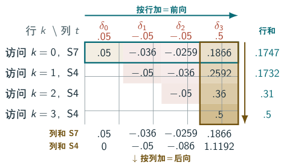
与上表相同的贡献表。青框按行加，得到各次访问的 λ \lambda λ e t ( s ) δ t e_t(s)\delta_t e t ( s ) δ t
上图逐步播放正文的回合：箭头下是 TD 误差，中间两条是 S7 与 S4 的迹，按访问分色成段，右侧是两格当前的估值；下图是贡献表，金框标出当前一步。按“下一步”走完四步，冻结表下累计写入为 ( . 0349408 , . 19664 ) (.0349408,.19664) ( .0349408 , .19664 ) α \alpha α δ t \delta_t δ t α δ t e t \alpha\delta_te_t α δ t e t − . 049 -.049 − .049 . 709007 .709007 .709007 1 − α 1-\alpha 1 − α 1.907776 1.907776 1.907776 . 6713157 .6713157 .6713157 α \alpha α . 1 .1 .1 . 59832 .59832 .59832 . 601431 .601431 .601431 α 2 \alpha^2 α 2
不同意见 行列互换说明的是冻结表、回合末写入时两种视角给出相同的总量，它不说明哪一种更好用。函数逼近下，一次更新会改动许多状态的预测，冻结表这一前提离实际运行更远。也有人认为，直接实现前向视角在现代硬件上并不比迹贵，例如用截断的 λ \lambda λ
离线等价
把误差恒等式代入前向视角的回合总增量，交换求和次序，就得到后向视角的形式。条件是：一回合内 V V V s s s
∑ k : S k = s α [ G k λ − V ( s ) ] = ∑ k 1 { S k = s } ∑ t ≥ k α ( γ λ ) t − k δ t = ∑ t = 0 T − 1 α δ t ∑ k ≤ t ( γ λ ) t − k 1 { S k = s } = ∑ t = 0 T − 1 α δ t e t ( s ) . \begin{aligned}
\sum_{k:\,S_k=s}\alpha\bigl[G_k^\lambda-V(s)\bigr]
&=\sum_{k}\mathbf 1\{S_k=s\}\sum_{t\ge k}\alpha(\gamma\lambda)^{t-k}\delta_t\\
&=\sum_{t=0}^{T-1}\alpha\,\delta_t\sum_{k\le t}(\gamma\lambda)^{t-k}\mathbf 1\{S_k=s\}\\
&=\sum_{t=0}^{T-1}\alpha\,\delta_t\,e_t(s).
\end{aligned} k : S k = s ∑ α [ G k λ − V ( s ) ] = k ∑ 1 { S k = s } t ≥ k ∑ α ( γλ ) t − k δ t = t = 0 ∑ T − 1 α δ t k ≤ t ∑ ( γλ ) t − k 1 { S k = s } = t = 0 ∑ T − 1 α δ t e t ( s ) .
第一个等号代入误差恒等式，要求各 δ t \delta_t δ t k k k t t t e t ( s ) e_t(s) e t ( s )
离线等价 （Sutton 与 Barto 第 2 版 12.2 节） 在上述条件下，对每个状态 s s s ∑ k : S k = s α ( G k λ − V ( s ) ) \sum_{k:S_k=s}\alpha(G_k^\lambda-V(s)) ∑ k : S k = s α ( G k λ − V ( s )) ∑ t α δ t e t ( s ) \sum_t\alpha\delta_te_t(s) ∑ t α δ t e t ( s )
泥地上 α = . 2 \alpha=.2 α = .2 λ = . 8 \lambda=.8 λ = .8 ( . 4 , . 5 ) (.4,.5) ( .4 , .5 ) ( . 434941 , . 696640 ) (.434941,.696640) ( .434941 , .696640 ) ( . 41 , . 58 ) (.41,.58) ( .41 , .58 ) ( . 4658 , . 742 ) (.4658,.742) ( .4658 , .742 ) . 8 .8 .8 10 / 19 ≈ . 5263 10/19\approx.5263 10/19 ≈ .5263
这些数可以逐项核对。TD(0) 在冻结表上的四次误差依次是 . 05 .05 .05 − . 05 -.05 − .05 − . 05 -.05 − .05 . 5 .5 .5 . 2 ( . 05 ) = . 01 .2(.05)=.01 .2 ( .05 ) = .01 . 2 ( − . 05 − . 05 + . 5 ) = . 08 .2(-.05-.05+.5)=.08 .2 ( − .05 − .05 + .5 ) = .08 . 8 .8 .8 . 2 ( . 574704 − . 4 ) = . 2 × . 174704 .2(.574704-.4)=.2\times.174704 .2 ( .574704 − .4 ) = .2 × .174704 . 729 .729 .729 . 81 .81 .81 . 9 .9 .9 1 1 1
状态
回合前
TD(0)
TD(.8) 前向＝后向
MC（每次访问）
真值
S7
.4
.41
.434941
.4658
.4737
S4
.5
.58
.696640
.742
.5263
成功概率是 . 1 .1 .1 ( γ λ ) 3 (\gamma\lambda)^3 ( γλ ) 3
不同意见 离线等价的条件很强：表冻结、回合末写入、同一步长。这个定理说明迹从哪里来；在线改表时要恢复等价，需要 7.4 节的真在线 TD(λ \lambda λ
易错 在线每步改表时，各 δ t \delta_t δ t
算法 7.2 与在线写入
把离线等价右端的和 ∑ t α δ t e t ( s ) \sum_t\alpha\delta_te_t(s) ∑ t α δ t e t ( s )
算法 7.2 表格 TD(λ \lambda λ
输入：策略 π \pi π α \alpha α γ \gamma γ λ \lambda λ V V V V V V
每回合：取 S 0 S_0 S 0 s s s e ( s ) ← 0 e(s)\gets0 e ( s ) ← 0 t ← 0 t\gets0 t ← 0
采取 A t ∼ π ( ⋅ ∣ S t ) A_t\sim\pi(\cdot\mid S_t) A t ∼ π ( ⋅ ∣ S t ) R t + 1 R_{t+1} R t + 1 S t + 1 S_{t+1} S t + 1
u ← V ( S t + 1 ) u\gets V(S_{t+1}) u ← V ( S t + 1 ) S t + 1 S_{t+1} S t + 1 u ← 0 u\gets0 u ← 0 δ t ← R t + 1 + γ u − V ( S t ) \delta_t\gets R_{t+1}+\gamma u-V(S_t) δ t ← R t + 1 + γ u − V ( S t ) 对各状态 s s s e ( s ) ← γ λ e ( s ) + 1 { s = S t } e(s)\gets\gamma\lambda e(s)+\mathbf 1\{s=S_t\} e ( s ) ← γλ e ( s ) + 1 { s = S t }
对各状态 s s s V ( s ) ← V ( s ) + α δ t e ( s ) V(s)\gets V(s)+\alpha\delta_te(s) V ( s ) ← V ( s ) + α δ t e ( s )
若未终止，t ← t + 1 t\gets t+1 t ← t + 1
最后一次转移也要执行第 5–7 行；第 7 行每步改表，与离线等价的差见 7.4 节。泥地上第一次转移 S7→S4 的 δ 0 = . 9 ( . 5 ) − . 4 = . 05 \delta_0=.9(.5)-.4=.05 δ 0 = .9 ( .5 ) − .4 = .05 V ( S 7 ) V(\mathrm{S7}) V ( S7 ) . 4 .4 .4 . 41 .41 .41 δ 1 = . 9 ( . 5 ) − . 5 = − . 05 \delta_1=.9(.5)-.5=-.05 δ 1 = .9 ( .5 ) − .5 = − .05 e ( S 7 ) = . 72 e(\mathrm{S7})=.72 e ( S7 ) = .72 e ( S 4 ) = 1 e(\mathrm{S4})=1 e ( S4 ) = 1 . 41 − . 2 ( . 05 ) ( . 72 ) = . 4028 .41-.2(.05)(.72)=.4028 .41 − .2 ( .05 ) ( .72 ) = .4028 . 49 .49 .49 V ( S t ) V(S_t) V ( S t ) V ( S t + 1 ) V(S_{t+1}) V ( S t + 1 )
观察新转移后，更新是 Δ V ( s ) = α δ t e t ( s ) \Delta V(s)=\alpha\delta_t e_t(s) Δ V ( s ) = α δ t e t ( s ) V ( S 7 ) = . 4 , V ( S 4 ) = . 5 , α = . 2 V(\mathrm{S7})=.4,V(\mathrm{S4})=.5,\alpha=.2 V ( S7 ) = .4 , V ( S4 ) = .5 , α = .2
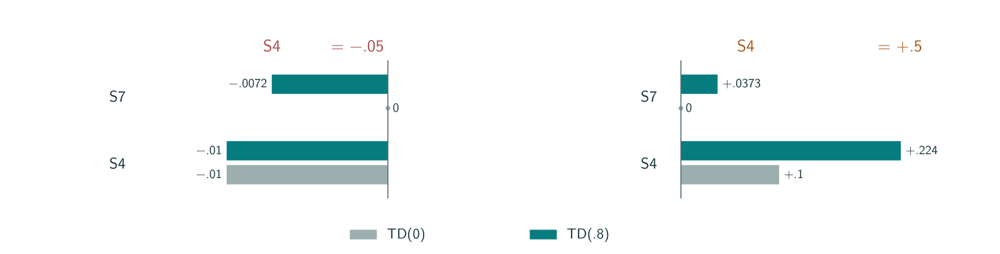
打滑产生负误差，到终点产生正误差。灰条是 TD(0)，绿条是 TD(.8)。每幅图都让两种方法读同一张表，以显示迹对各状态增量的影响。
TD(0) 只修正出发状态，资格迹还修正早先经过的 S7。右图中 δ = 1 − . 5 = . 5 \delta=1-.5=.5 δ = 1 − .5 = .5 . 2 ( . 5 ) ( . 72 ) 3 ≈ . 0373 .2(.5)(.72)^3\approx .0373 .2 ( .5 ) ( .72 ) 3 ≈ .0373
不同意见 每一步都要碰所有迹非零的状态。实现中常设阈值把小迹截掉，或只保留最近访问的几个状态；这改变了算法，精确等价不再成立；影响的大小取决于任务。
n n n
G k : k + n − V ( S k ) = ∑ j = 0 n − 1 γ j δ k + j , G k λ − V ( S k ) = ∑ j ≥ 0 ( γ λ ) j δ k + j . G_{k:k+n}-V(S_k)=\sum_{j=0}^{n-1}\gamma^j\delta_{k+j},\qquad G_k^\lambda-V(S_k)=\sum_{j\ge0}(\gamma\lambda)^j\delta_{k+j}. G k : k + n − V ( S k ) = j = 0 ∑ n − 1 γ j δ k + j , G k λ − V ( S k ) = j ≥ 0 ∑ ( γλ ) j δ k + j .
前者是矩形窗，满 n n n （α = . 2 \alpha=.2 α = .2 n = 3 n=3 n = 3 . 05 .05 .05 − . 05 -.05 − .05 − . 05 -.05 − .05 . 5 .5 .5 G 0 : 3 = . 9 3 × . 5 = . 3645 G_{0:3}=.9^3\times.5=.3645 G 0 : 3 = . 9 3 × .5 = .3645 . 4 + δ 0 + . 9 δ 1 + . 81 δ 2 = . 4 − . 0355 .4+\delta_0+.9\delta_1+.81\delta_2=.4-.0355 .4 + δ 0 + .9 δ 1 + .81 δ 2 = .4 − .0355 . 4 .4 .4 . 3929 .3929 .3929 . 81 .81 .81 . 9 .9 .9 1 1 1 . 5 .5 .5 . 2 .2 .2 . 062 .062 .062 . 08 .08 .08 . 1 .1 .1 . 742 .742 .742 λ \lambda λ . 5 .5 .5 ( . 373248 , 2.2384 ) (.373248,2.2384) ( .373248 , 2.2384 ) . 4349 .4349 .4349 . 6966 .6966 .6966
两者写入 S4 的总量相近（. 242 .242 .242 与 . 1966 .1966 .1966 n n n δ 3 \delta_3 δ 3 . 3732 .3732 .3732 n n n
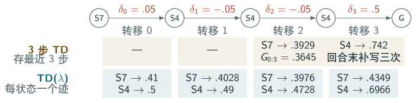
上方是泥地回合与冻结表上的四个 TD 误差（α = . 2 \alpha=.2 α = .2 中行是 3 步 TD：前两步不写，转移 2 之后把 S7 改到 . 3929 .3929 .3929 G 0 : 3 = . 3645 G_{0:3}=.3645 G 0 : 3 = .3645 λ \lambda λ . 4349 .4349 .4349 . 6966 .6966 .6966
不同意见 矩形窗也有好处：每次访问的修正只依赖有限的未来，偏差与方差的界更容易写清，与经验回放配合也更直接。把迹截断到最近若干步，或用截断的 λ \lambda λ
三种迹的定义
三种迹都先把旧迹整体乘 γ λ \gamma\lambda γλ x t = x ( S t ) ∈ R d \mathbf x_t=\mathbf x(S_t)\in\mathbb R^d x t = x ( S t ) ∈ R d x t \mathbf x_t x t S t S_t S t e t ( s ) e_t(s) e t ( s ) e t \mathbf e_t e t s s s e − 1 = 0 \mathbf e_{-1}=\mathbf 0 e − 1 = 0
迹
表格
线性特征
累积迹
e t ( s ) = γ λ e t − 1 ( s ) + 1 { S t = s } e_t(s)=\gamma\lambda e_{t-1}(s)+\mathbf 1\{S_t=s\} e t ( s ) = γλ e t − 1 ( s ) + 1 { S t = s } e t = γ λ e t − 1 + x t \mathbf e_t=\gamma\lambda\mathbf e_{t-1}+\mathbf x_t e t = γλ e t − 1 + x t
Dutch 迹
e t ( S t ) = ( 1 − α ) γ λ e t − 1 ( S t ) + 1 e_t(S_t)=(1-\alpha)\gamma\lambda e_{t-1}(S_t)+1 e t ( S t ) = ( 1 − α ) γλ e t − 1 ( S t ) + 1 γ λ \gamma\lambda γλ e t = γ λ e t − 1 + ( 1 − α γ λ e t − 1 ⊤ x t ) x t \mathbf e_t=\gamma\lambda\mathbf e_{t-1}+(1-\alpha\gamma\lambda\mathbf e_{t-1}^\top\mathbf x_t)\mathbf x_t e t = γλ e t − 1 + ( 1 − α γλ e t − 1 ⊤ x t ) x t
替换迹
e t ( S t ) = 1 e_t(S_t)=1 e t ( S t ) = 1 γ λ \gamma\lambda γλ 仅二值特征：x t , i = 1 x_{t,i}=1 x t , i = 1 e t , i = 1 e_{t,i}=1 e t , i = 1 γ λ \gamma\lambda γλ
累积迹与替换迹配 TD(λ \lambda λ w ← w + α δ t e t \mathbf w\gets\mathbf w+\alpha\delta_t\mathbf e_t w ← w + α δ t e t λ \lambda λ x t \mathbf x_t x t ∇ v ^ ( S t , w t ) \nabla\hat v(S_t,\mathbf w_t) ∇ v ^ ( S t , w t ) 2.2384 2.2384 2.2384 1.907776 1.907776 1.907776 1 1 1
不同意见 替换迹只对取值 0/1 的特征有自然的定义，推广到一般线性特征要另加约定。在很少重复访问的任务里，三种迹几乎一样，选哪种影响不大。
原地打转时的三种迹
S4 每步有 . 9 .9 .9 e ← . 72 e + 1 e\gets.72e+1 e ← .72 e + 1 e ← ( 1 − α ) . 72 e + 1 e\gets(1-\alpha)\,.72\,e+1 e ← ( 1 − α ) .72 e + 1 e ← 1 e\gets1 e ← 1 1 / ( 1 − γ λ ) ≈ 3.57 1/(1-\gamma\lambda)\approx3.57 1/ ( 1 − γλ ) ≈ 3.57 1 / ( 1 − ( 1 − α ) γ λ ) ≈ 2.36 1/(1-(1-\alpha)\gamma\lambda)\approx2.36 1/ ( 1 − ( 1 − α ) γλ ) ≈ 2.36 1 1 1 α \alpha α 1 − α 1-\alpha 1 − α δ 3 = . 5 \delta_3=.5 δ 3 = .5 . 2238 .2238 .2238 . 1908 .1908 .1908 . 1 .1 .1
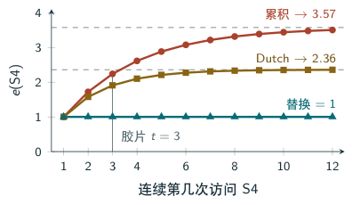
横轴是连续第几次访问 S4，纵轴是 S4 的迹（γ λ = . 72 \gamma\lambda=.72 γλ = .72 α = . 2 \alpha=.2 α = .2 3.57 3.57 3.57 2.36 2.36 2.36 1 1 1
α e ( s ) \alpha e(s) α e ( s ) λ = 1 \lambda=1 λ = 1 γ = . 9 \gamma=.9 γ = .9 10 10 10 α e \alpha e α e 2 2 2
S4 连续访问时，三种迹的差别一步步拉大。图中三条线是连续第几次访问后 S4 的迹，虚线是累积迹与 Dutch 迹的极限，竖线标出第 3 次访问。α = . 2 \alpha=.2 α = .2 λ = . 8 \lambda=.8 λ = .8 2.2384 2.2384 2.2384 1.907776 1.907776 1.907776 1 1 1 3.57 3.57 3.57 2.36 2.36 2.36 1 1 1 δ 3 = . 5 \delta_3=.5 δ 3 = .5 . 2238 .2238 .2238 . 1908 .1908 .1908 . 1 .1 .1 λ \lambda λ α e \alpha e α e α \alpha α
泥地实验：λ \lambda λ
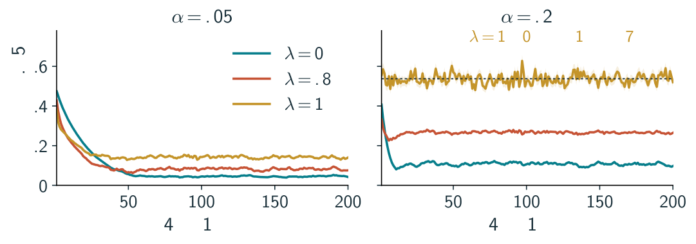
两幅图分别取步长 α = . 05 \alpha=.05 α = .05 . 2 .2 .2 λ = 0 \lambda=0 λ = 0 . 8 .8 .8 1 1 1 λ = . 8 \lambda=.8 λ = .8 λ = 0 \lambda=0 λ = 0 λ = 1 \lambda=1 λ = 1 . 5 .5 .5
实验用普通的在线累积迹，泥地固定策略预测，从零初值开始，独立运行 64 次，每次 200 回合，三种 λ \lambda λ ± 1 \pm1 ± 1 （α = . 05 \alpha=.05 α = .05 第 10 回合时 λ = . 8 \lambda=.8 λ = .8 . 226 .226 .226 λ = 0 \lambda=0 λ = 0 . 316 .316 .316 . 076 .076 .076 . 042 .042 .042 （α = . 2 \alpha=.2 α = .2 中 λ = 1 \lambda=1 λ = 1 . 5 .5 .5 . 54 .54 .54 . 52 .52 .52 λ \lambda λ α e t ( s ) \alpha e_t(s) α e t ( s )
λ = 1 \lambda=1 λ = 1 γ = . 9 \gamma=.9 γ = .9 1 / ( 1 − . 9 ) = 10 1/(1-.9)=10 1/ ( 1 − .9 ) = 10 α e \alpha e α e 1 1 1 α e t ( s ) \alpha e_t(s) α e t ( s ) λ \lambda λ α \alpha α
不同意见 这只是泥地一个任务、一种迹；改用替换迹或 Dutch 迹，最好的 λ \lambda λ λ \lambda λ
下表是同一批运行中两个状态的估值（α = . 05 \alpha=.05 α = .05 固定策略始终向上，零初值），格内为该回合结束时 S7 / S4 的估值，取 64 次独立运行的均值。
第 1 回合
第 10 回合
第 200 回合
TD(0)，λ = 0 \lambda=0 λ = 0
. 000 .000 .000 . 050 .050 .050 . 069 .069 .069 . 337 .337 .337 . 493 .493 .493 . 541 .541 .541
TD(. 8 .8 .8
. 011 .011 .011 . 138 .138 .138 . 164 .164 .164 . 560 .560 .560 . 516 .516 .516 . 600 .600 .600
真值是 v π ( S 7 ) = 9 / 19 ≈ . 474 v_\pi(\mathrm{S7})=9/19\approx.474 v π ( S7 ) = 9/19 ≈ .474 v π ( S 4 ) = 10 / 19 ≈ . 526 v_\pi(\mathrm{S4})=10/19\approx.526 v π ( S4 ) = 10/19 ≈ .526 0 0 0 V ( S 4 ) V(\mathrm{S4}) V ( S4 ) 0 0 0 . 8 .8 .8 . 8 .8 .8 . 07 .07 .07 （. 076 .076 .076 对 . 042 .042 .042 λ = 1 \lambda=1 λ = 1 . 024 .024 .024 . 263 .263 .263 . 202 .202 .202 . 709 .709 .709 . 516 .516 .516 . 716 .716 .716
不同意见 函数逼近下，一步 TD 也能通过共享参数让起点的估计动起来；随回合增加，两种做法的差别也在缩小。
7.4 在线更新与前向等价课件
7.3 节的离线等价要求回合内表不动、回合末一次写入。资格迹的长处在于每步就能改表；这样运行时，第 t t t t t t V 0 = ( . 4 , . 5 ) V_0=(.4,.5) V 0 = ( .4 , .5 ) α = . 2 \alpha=.2 α = .2 γ = . 9 \gamma=.9 γ = .9 λ = . 8 \lambda=.8 λ = .8
第一遍：冻结初表 回合内所有误差都读 V 0 V_0 V 0 λ \lambda λ V ( S 4 ) = . 69664 V(\mathrm{S4})=.69664 V ( S4 ) = .69664 . 434941 .434941 .434941
第二遍：在线累积迹 每步写入，迹照常累积。δ t \delta_t δ t V t V_t V t
t t t 转移
δ t \delta_t δ t e t ( S 4 ) e_t(\mathrm{S4}) e t ( S4 ) V t + 1 ( S 7 ) V_{t+1}(\mathrm{S7}) V t + 1 ( S7 ) V t + 1 ( S 4 ) V_{t+1}(\mathrm{S4}) V t + 1 ( S4 )
0
S7→S4
.050
0
.410000
.500000
1
S4→S4
−.050
1
.402800
.490000
2
S4→S4
−.049
1.72
.397720
.473144
3
S4→G
.526856
2.2384
.437049
.709007
第 2 行的误差已读到改过的表：δ 2 = . 9 ( . 49 ) − . 49 = − . 049 \delta_2=.9(.49)-.49=-.049 δ 2 = .9 ( .49 ) − .49 = − .049 V 3 ( S 4 ) = . 49 + . 2 ( − . 049 ) ( 1.72 ) = . 473144 V_3(\mathrm{S4})=.49+.2(-.049)(1.72)=.473144 V 3 ( S4 ) = .49 + .2 ( − .049 ) ( 1.72 ) = .473144 1 1 1 . 72 .72 .72 . 5184 .5184 .5184 . 373248 .373248 .373248 . 526856 .526856 .526856 2.2384 2.2384 2.2384 α e 3 ( S 4 ) = . 2 × 2.2384 ≈ . 45 \alpha e_3(\mathrm{S4})=.2\times2.2384\approx.45 α e 3 ( S4 ) = .2 × 2.2384 ≈ .45 . 709007 .709007 .709007 . 69664 .69664 .69664 . 012367 .012367 .012367 V 0 V_0 V 0 − . 05 -.05 − .05 ( . 434941 , . 696640 ) (.434941,.696640) ( .434941 , .696640 )
第三遍：在线前向参照 以固定线性特征 x t = x ( S t ) \mathbf x_t=\mathbf x(S_t) x t = x ( S t ) v ^ ( S t , w ) = w ⊤ x t \hat v(S_t,\mathbf w)=\mathbf w^\top\mathbf x_t v ^ ( S t , w ) = w ⊤ x t h h h λ \lambda λ h h h h h h h h h h = 2 h=2 h = 2
G 0 : 2 λ = ( 1 − λ ) [ R 1 + γ V 0 ( S 4 ) ] + λ [ R 1 + γ R 2 + γ 2 V 1 ( S 4 ) ] = . 2 × . 45 + . 8 × . 405 = . 414. G^\lambda_{0:2}=(1-\lambda)\bigl[R_1+\gamma V_0(\mathrm{S4})\bigr]+\lambda\bigl[R_1+\gamma R_2+\gamma^2V_1(\mathrm{S4})\bigr]=.2\times.45+.8\times.405=.414. G 0 : 2 λ = ( 1 − λ ) [ R 1 + γ V 0 ( S4 ) ] + λ [ R 1 + γ R 2 + γ 2 V 1 ( S4 ) ] = .2 × .45 + .8 × .405 = .414.
一步回报 . 9 × . 5 = . 45 .9\times.5=.45 .9 × .5 = .45 . 81 × . 5 = . 405 .81\times.5=.405 .81 × .5 = .405 V 1 V_1 V 1 . 4 + . 2 ( . 414 − . 4 ) = . 4028 .4+.2(.414-.4)=.4028 .4 + .2 ( .414 − .4 ) = .4028 . 5 + . 2 ( . 45 − . 5 ) = . 49 .5+.2(.45-.5)=.49 .5 + .2 ( .45 − .5 ) = .49 . 4734032 .4734032 .4734032 . 473144 .473144 .473144 V ( S 4 ) = . 6713 V(\mathrm{S4})=.6713 V ( S4 ) = .6713 λ \lambda λ 真在线 TD(λ \lambda λ （true online TD(λ \lambda λ λ \lambda λ 前向参照的权重三角图（第 17 章选读）
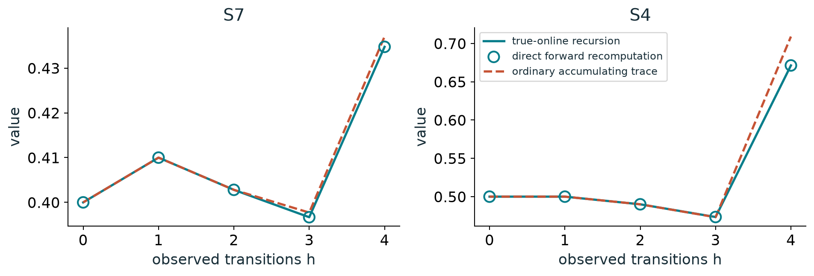
同一条泥地轨迹的四个前缀。逐前缀重算与真在线 TD 给出相同预测。
不同意见 在线写入让信息传得更快，代价是与前向目标不再等价；步长较大时，累积迹在重复访问的状态上还会冲过头。哪种写法更好，取决于步长和任务。
累积迹为什么多算 第二步的误差已经改过 S4，表里的 S4 已经部分吸收了那次访问的修正；第三步仍按满份 . 72 .72 .72 1 − α 1-\alpha 1 − α 1.72 1.72 1.72 1.576 1.576 1.576 2.2384 2.2384 2.2384 1.907776 1.907776 1.907776 λ \lambda λ . 4734032 .4734032 .4734032 . 473144 .473144 .473144 . 6713157 .6713157 .6713157 . 4347542 .4347542 .4347542 . 5263 .5263 .5263 d = R + γ v ′ − v o l d d=R+\gamma v'-v_{\rm old} d = R + γ v ′ − v old
三根柱是第 4 步 S4 的值：离线 λ \lambda λ . 6966 .6966 .6966 . 7090 .7090 .7090 λ \lambda λ . 6713 .6713 .6713 . 5263 .5263 .5263 . 5 .5 .5
在线前向目标与 Dutch 迹
先看表格的一项。在同一泥格再拟合一次目标 y y y v v v ( 1 − α ) v + α y (1-\alpha)v+\alpha y ( 1 − α ) v + α y Δ \Delta Δ ( 1 − α ) Δ (1-\alpha)\Delta ( 1 − α ) Δ 1 − α 1-\alpha 1 − α e t ( S t ) = ( 1 − α ) γ λ e t − 1 ( S t ) + 1 e_t(S_t)=(1-\alpha)\gamma\lambda e_{t-1}(S_t)+1 e t ( S t ) = ( 1 − α ) γλ e t − 1 ( S t ) + 1 Dutch 迹 。取 γ λ = . 72 \gamma\lambda=.72 γλ = .72 α = . 2 \alpha=.2 α = .2 . 72 .72 .72 ( 1 − . 2 ) × . 72 = . 576 (1-.2)\times.72=.576 ( 1 − .2 ) × .72 = .576
两根柱是第三步 S4 的迹：灰段是衰减后的旧访问，青段是本次访问的单位权重。累积迹为 . 72 + 1 = 1.720 .72+1=1.720 .72 + 1 = 1.720 1 − α = . 8 1-\alpha=.8 1 − α = .8 . 576 + 1 = 1.576 .576+1=1.576 .576 + 1 = 1.576
G k : h λ G_{k:h}^\lambda G k : h λ h h h λ \lambda λ S h S_h S h w h − 1 \mathbf w_{h-1} w h − 1 x ( G ) = 0 \mathbf x(G)=\mathbf 0 x ( G ) = 0 v t = w t ⊤ x t v_t=\mathbf w_t^\top\mathbf x_t v t = w t ⊤ x t v t o l d = w t − 1 ⊤ x t v^{\rm old}_t=\mathbf w_{t-1}^\top\mathbf x_t v t old = w t − 1 ⊤ x t k < t k<t k < t
G k : t + 1 λ − G k : t λ = ( γ λ ) t − k ( δ t + v t − v t o l d ) . G_{k:t+1}^\lambda-G_{k:t}^\lambda=(\gamma\lambda)^{t-k}(\delta_t+v_t-v^{\rm old}_t). G k : t + 1 λ − G k : t λ = ( γλ ) t − k ( δ t + v t − v t old ) .
I − α x t x t ⊤ \mathbf I-\alpha\mathbf x_t\mathbf x_t^\top I − α x t x t ⊤ x t \mathbf x_t x t
e t = ( I − α x t x t ⊤ ) γ λ e t − 1 + x t = γ λ e t − 1 + ( 1 − α γ λ e t − 1 ⊤ x t ) x t , \mathbf e_t=(\mathbf I-\alpha\mathbf x_t\mathbf x_t^\top)\gamma\lambda\mathbf e_{t-1}+\mathbf x_t=\gamma\lambda\mathbf e_{t-1}+(1-\alpha\gamma\lambda\mathbf e_{t-1}^\top\mathbf x_t)\mathbf x_t, e t = ( I − α x t x t ⊤ ) γλ e t − 1 + x t = γλ e t − 1 + ( 1 − α γλ e t − 1 ⊤ x t ) x t , w t + 1 = w t + α δ t e t + α ( v t − v t o l d ) ( e t − x t ) . \mathbf w_{t+1}=\mathbf w_t+\alpha\delta_t\mathbf e_t+\alpha(v_t-v^{\rm old}_t)(\mathbf e_t-\mathbf x_t). w t + 1 = w t + α δ t e t + α ( v t − v t old ) ( e t − x t ) .
在代码中保存上一转移更新前读到的后继预测，作为 v t o l d v^{\rm old}_t v t old e 0 = x 0 \mathbf e_0=\mathbf x_0 e 0 = x 0
在线等价 （van Seijen 与 Sutton 2014，定理 1） 固定线性特征、相同步长与相同初值时，这两式在每个前缀 h h h w h \mathbf w_h w h λ \lambda λ G k : h λ G^\lambda_{k:h} G k : h λ k = 0 , … , h − 1 k=0,\dots,h-1 k = 0 , … , h − 1
易错 真在线 TD(λ \lambda λ λ \lambda λ . 6713 .6713 .6713 . 6966 .6966 .6966 . 7090 .7090 .7090
不同意见 在线前向参照本身是定义出来的目标；它是否就是该追求的目标，仍有争议。步长小时三种做法只差 O ( α 2 ) O(\alpha^2) O ( α 2 ) van Seijen 等（JMLR 2016） 报告，在他们测试的全部任务与表示上，真在线方法的学习速度常常优于、从不劣于普通方法。但推导依赖线性特征。在深度网络中，同一状态在上次更新前后的预测差不能用一项内积写出，所以真在线的形式不能直接搬过去。
van Seijen 与 Sutton（2014） · 算法 7.3 见下文
算法 7.3 真在线 TD(λ \lambda λ
设 v ^ ( s ) = w ⊤ x ( s ) \hat v(s)=\mathbf w^\top\mathbf x(s) v ^ ( s ) = w ⊤ x ( s ) x ( s ) ∈ R d \mathbf x(s)\in\mathbb R^d x ( s ) ∈ R d w \mathbf w w V V V w \mathbf w w x ← x ( S ) \mathbf x\gets\mathbf x(S) x ← x ( S ) e ← 0 \mathbf e\gets\mathbf 0 e ← 0 v old ← 0 v_{\text{old}}\gets0 v old ← 0
取 A ∼ π ( ⋅ ∣ S ) A\sim\pi(\cdot\mid S) A ∼ π ( ⋅ ∣ S ) R R R S ′ S' S ′ x ′ ← x ( S ′ ) \mathbf x'\gets\mathbf x(S') x ′ ← x ( S ′ ) S ′ S' S ′ x ′ ← 0 \mathbf x'\gets\mathbf 0 x ′ ← 0
v ← w ⊤ x v\gets\mathbf w^\top\mathbf x v ← w ⊤ x v ′ ← w ⊤ x ′ v'\gets\mathbf w^\top\mathbf x' v ′ ← w ⊤ x ′ δ ← R + γ v ′ − v \delta\gets R+\gamma v'-v δ ← R + γ v ′ − v e ← γ λ e + ( 1 − α γ λ e ⊤ x ) x \mathbf e\gets\gamma\lambda\mathbf e+(1-\alpha\gamma\lambda\,\mathbf e^\top\mathbf x)\mathbf x e ← γλ e + ( 1 − α γλ e ⊤ x ) x w ← w + α δ e + α ( v − v old ) ( e − x ) \mathbf w\gets\mathbf w+\alpha\delta\mathbf e+\alpha(v-v_{\text{old}})(\mathbf e-\mathbf x) w ← w + α δ e + α ( v − v old ) ( e − x ) v old ← v ′ v_{\text{old}}\gets v' v old ← v ′ S ← S ′ S\gets S' S ← S ′ x ← x ′ \mathbf x\gets\mathbf x' x ← x ′
v − v old v-v_{\text{old}} v − v old v old v_{\text{old}} v old v ^ ( S ) \hat v(S) v ^ ( S ) v v v v v v e − x \mathbf e-\mathbf x e − x O ( d ) O(d) O ( d ) e = x \mathbf e=\mathbf x e = x λ = 0 \lambda=0 λ = 0 e = x \mathbf e=\mathbf x e = x
拿泥地的末步 S4→G 看两种算法的差从哪里来。普通累积迹的误差是 . 526856 .526856 .526856 2.2384 2.2384 2.2384 . 2 × . 526856 × 2.2384 = . 2359 .2\times.526856\times2.2384=.2359 .2 × .526856 × 2.2384 = .2359 . 7090 .7090 .7090 . 5266 .5266 .5266 1.9078 1.9078 1.9078 α δ e = . 2009 \alpha\delta e=.2009 α δe = .2009 . 2 × ( − . 0166 ) × ( 1.9078 − 1 ) = − . 0030 .2\times(-.0166)\times(1.9078-1)=-.0030 .2 × ( − .0166 ) × ( 1.9078 − 1 ) = − .0030 . 1979 .1979 .1979 . 6713 .6713 .6713 . 0380 .0380 .0380 2.2384 2.2384 2.2384 1.9078 1.9078 1.9078 . 0348 .0348 .0348 . 0030 .0030 .0030 δ \delta δ . 0001 .0001 .0001 . 7090 .7090 .7090 . 6713 .6713 .6713
v t − v t o l d v_t-v^{\rm old}_t v t − v t old
前向 λ \lambda λ
迹与写入
表示
等价的前向算法
条件；不成立时差在哪
累积迹，回合末写入
表格、线性
离线 λ \lambda λ
回合内 V V V w \mathbf w w
累积迹，每步写入
表格、线性
无逐步等价
少扣本回合已写入的改动，回合总更新与离线差 O ( α 2 ) O(\alpha^2) O ( α 2 )
Dutch 迹加预测修正（真在线 TD(λ \lambda λ
线性（含表格）
在线 λ \lambda λ w t \mathbf w_t w t
线性 v ^ = w ⊤ x \hat v=\mathbf w^\top\mathbf x v ^ = w ⊤ x
替换迹，回合末写入
表格
每次访问的 λ \lambda λ G k : k ′ λ G^\lambda_{k:k'} G k : k ′ λ
γ = λ = 1 \gamma=\lambda=1 γ = λ = 1
线性特征下第一行的证明一字不改，只要把指示函数换成特征向量；γ = λ = 1 \gamma=\lambda=1 γ = λ = 1 λ \lambda λ
在线累积迹的差项课件
记 V t V_t V t t t t δ t \delta_t δ t V t V_t V t G k λ G_k^\lambda G k λ S k + j S_{k+j} S k + j V k + j V_{k+j} V k + j
G k λ − V k ( S k ) = ∑ j ≥ 0 ( γ λ ) j δ k + j + ∑ j ≥ 1 γ j λ j − 1 [ V k + j ( S k + j ) − V k + j − 1 ( S k + j ) ] . G_k^\lambda-V_k(S_k)=\sum_{j\ge0}(\gamma\lambda)^j\delta_{k+j}+\sum_{j\ge1}\gamma^j\lambda^{j-1}\bigl[V_{k+j}(S_{k+j})-V_{k+j-1}(S_{k+j})\bigr]. G k λ − V k ( S k ) = j ≥ 0 ∑ ( γλ ) j δ k + j + j ≥ 1 ∑ γ j λ j − 1 [ V k + j ( S k + j ) − V k + j − 1 ( S k + j ) ] .
第一项是在线 TD(λ \lambda λ k k k α δ e \alpha\delta e α δe O ( α ) O(\alpha) O ( α ) α \alpha α O ( α 2 ) O(\alpha^2) O ( α 2 ) ( . 4 , . 5 ) (.4,.5) ( .4 , .5 ) γ = . 9 \gamma=.9 γ = .9 λ = . 8 \lambda=.8 λ = .8
α \alpha α 离线 λ \lambda λ
在线累积迹
差
差/ α 2 /\alpha^2 / α 2
. 2 .2 .2 . 69664 .69664 .69664 . 709007 .709007 .709007 . 012367 .012367 .012367 . 309 .309 .309
. 1 .1 .1 . 59832 .59832 .59832 . 601431 .601431 .601431 . 003111 .003111 .003111 . 311 .311 .311
. 05 .05 .05 . 54916 .54916 .54916 . 549940 .549940 .549940 . 000780 .000780 .000780 . 312 .312 .312
步长减半，差约为四分之一（. 012367 / . 003111 ≈ 3.98 .012367/.003111\approx3.98 .012367/.003111 ≈ 3.98 / α 2 /\alpha^2 / α 2 van Seijen 等（JMLR 2016）
三种迹的扫描
100 100 100 200 200 200 0 0 0
α \alpha α λ \lambda λ 累积
真在线（Dutch）
替换
. 2 .2 .2 0 0 0 . 1115 .1115 .1115 . 1115 .1115 .1115 . 1115 .1115 .1115
. 2 .2 .2 . 8 .8 .8 . 2658 .2658 .2658 . 1484 .1484 .1484 . 1035 .1035 .1035
. 2 .2 .2 1 1 1 . 5349 .5349 .5349 . 2027 .2027 .2027 . 1038 .1038 .1038
. 05 .05 .05 1 1 1 . 1530 .1530 .1530 . 1070 .1070 .1070 . 0692 .0692 .0692
泥地 S4 会原地打转。α = . 2 \alpha=.2 α = .2 λ \lambda λ λ \lambda λ α = . 2 , λ = 1 \alpha=.2,\lambda=1 α = .2 , λ = 1 . 05 .05 .05 λ \lambda λ α \alpha α v ( S 7 ) = . 4737 v(\mathrm{S7})=.4737 v ( S7 ) = .4737 v ( S 4 ) = . 5263 v(\mathrm{S4})=.5263 v ( S4 ) = .5263
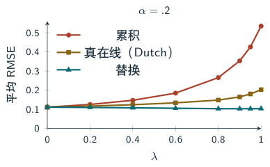
横轴是 λ \lambda λ α = . 2 \alpha=.2 α = .2 λ \lambda λ
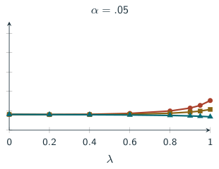
同上，α = . 05 \alpha=.05 α = .05
不同意见 泥地专门让一个状态反复打转，对累积迹不利；状态很少重复时三种迹几乎相同。线性函数逼近下替换迹没有一般定义，Dutch 迹有前向视角的保证，而在这个任务上它的误差不是最小：有理论保证与在某个任务上误差最小是两回事。选哪一种迹，要看状态重复得多不多，以及表示是表格还是特征。
7.5 动作价值与离策略多步学习课件
只学 V V V Q ( s , a ) Q(s,a) Q ( s , a )
δ t = R t + 1 + γ Q ( S t + 1 , A t + 1 ) − Q ( S t , A t ) \delta_t=R_{t+1}+\gamma Q(S_{t+1},A_{t+1})-Q(S_t,A_t) δ t = R t + 1 + γ Q ( S t + 1 , A t + 1 ) − Q ( S t , A t )
替代状态价值误差，并给 ( S t , A t ) (S_t,A_t) ( S t , A t ) Q ( s , a ) ← Q ( s , a ) + α δ t e t ( s , a ) Q(s,a)\leftarrow Q(s,a)+\alpha\delta_te_t(s,a) Q ( s , a ) ← Q ( s , a ) + α δ t e t ( s , a )
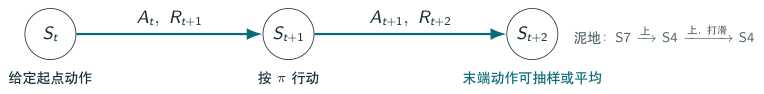
沿时间从左往右：起点动作 A t A_t A t π \pi π R t + 1 , S t + 1 , A t + 1 , R t + 2 R_{t+1},S_{t+1},A_{t+1},R_{t+2} R t + 1 , S t + 1 , A t + 1 , R t + 2 S t + 2 S_{t+2} S t + 2
两步目标的末端动作有两种处理：
G = R t + 1 + γ R t + 2 + γ 2 { Q ( S t + 2 , A t + 2 ) , 两步 Sarsa , ∑ a π ( a ∣ S t + 2 ) Q ( S t + 2 , a ) , 两步 Expected Sarsa . G=R_{t+1}+\gamma R_{t+2}+\gamma^2\begin{cases}Q(S_{t+2},A_{t+2}),&\text{两步 Sarsa},\\ \sum_a\pi(a\mid S_{t+2})Q(S_{t+2},a),&\text{两步 Expected Sarsa}.\end{cases} G = R t + 1 + γ R t + 2 + γ 2 { Q ( S t + 2 , A t + 2 ) , ∑ a π ( a ∣ S t + 2 ) Q ( S t + 2 , a ) , 两步 Sarsa , 两步 Expected Sarsa .
在泥地上算一遍。从 S7 向上到 S4，再打滑留在 S4，两步奖励都是 0 0 0 π \pi π . 1 .1 .1 . 9 .9 .9 Q ( S 4 , 上 ) = . 5 Q(\mathrm{S4},\text{上})=.5 Q ( S4 , 上 ) = .5 Q ( S 4 , 左 ) = . 7 Q(\mathrm{S4},\text{左})=.7 Q ( S4 , 左 ) = .7 γ 2 = . 81 \gamma^2=.81 γ 2 = .81
目标
这条记录的值
对 A t + 2 A_{t+2} A t + 2
两步 Sarsa
抽到左：. 81 × . 7 = . 567 .81\times.7=.567 .81 × .7 = .567 . 81 × . 5 = . 405 .81\times.5=.405 .81 × .5 = .405
. 5508 .5508 .5508
两步 Expected Sarsa
. 81 ( . 1 × . 5 + . 9 × . 7 ) = . 81 × . 68 = . 5508 .81(.1\times.5+.9\times.7)=.81\times.68=.5508 .81 ( .1 × .5 + .9 × .7 ) = .81 × .68 = .5508 . 5508 .5508 .5508
两者均值相同；Expected Sarsa 去掉了末端动作抽样带来的方差，两步 Sarsa 在此处的标准差约为 . 049 .049 .049
不同意见 末端按 π \pi π
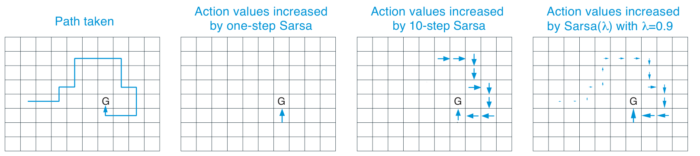
据 Sutton 与 Barto 例 12.1 的网格：线是首次抵达 G G G + 1 +1 + 1 γ = 1 \gamma=1 γ = 1 λ \lambda λ
网格中的 Sarsa(λ \lambda λ 这条路径上每个状态动作对只出现一次，各状态里只有实际选的那个动作的估计上升。取 γ = 1 \gamma=1 γ = 1 λ \lambda λ λ = . 9 \lambda=.9 λ = .9 . 9 3 .9^3 . 9 3 k k k
Δ Q ( S k , A k ) = α δ T − 1 ( γ λ ) T − 1 − k , \Delta Q(S_k,A_k)=\alpha\,\delta_{T-1}(\gamma\lambda)^{T-1-k}, Δ Q ( S k , A k ) = α δ T − 1 ( γλ ) T − 1 − k ,
终点误差 δ T − 1 \delta_{T-1} δ T − 1
不同意见 绕路的动作也一样分到功劳。重访某状态时清掉该状态其他动作的迹，或改用替换迹，可以减轻这一点。
算法 7.4 表格 Sarsa(λ \lambda λ
输入：步长 α \alpha α γ \gamma γ λ \lambda λ ε \varepsilon ε Q Q Q Q Q Q ε \varepsilon ε π Q \pi_Q π Q A ′ A' A ′
初始化 Q Q Q S S S e ← 0 e\gets0 e ← 0
按 Q ( S , ⋅ ) Q(S,\cdot) Q ( S , ⋅ ) ε \varepsilon ε A A A
执行 A A A R R R S ′ S' S ′
若 S ′ S' S ′ u ← 0 u\gets0 u ← 0 π Q ( ⋅ ∣ S ′ ) \pi_Q(\cdot\mid S') π Q ( ⋅ ∣ S ′ ) A ′ A' A ′ u ← Q ( S ′ , A ′ ) u\gets Q(S',A') u ← Q ( S ′ , A ′ )
δ ← R + γ u − Q ( S , A ) \delta\gets R+\gamma u-Q(S,A) δ ← R + γ u − Q ( S , A ) 对各 ( s , a ) (s,a) ( s , a ) e ( s , a ) ← γ λ e ( s , a ) e(s,a)\gets\gamma\lambda e(s,a) e ( s , a ) ← γλ e ( s , a ) e ( S , A ) ← e ( S , A ) + 1 e(S,A)\gets e(S,A)+1 e ( S , A ) ← e ( S , A ) + 1
对各 ( s , a ) (s,a) ( s , a ) Q ( s , a ) ← Q ( s , a ) + α δ e ( s , a ) Q(s,a)\gets Q(s,a)+\alpha\delta e(s,a) Q ( s , a ) ← Q ( s , a ) + α δe ( s , a )
若 S ′ S' S ′ ( S , A ) ← ( S ′ , A ′ ) (S,A)\gets(S',A') ( S , A ) ← ( S ′ , A ′ )
出处是 Sutton 与 Barto 第 2 版 12.7 节算法框的表格特例，以及 Silver 第 5 讲。
不同意见 策略变了以后，迹里仍留着按旧排序选出的动作；ε \varepsilon ε λ \lambda λ
后续动作由谁产生
沿用第 6 章的离策略设定：在 S4，行为策略 b b b . 05 .05 .05 π \pi π . 1 .1 .1 . 9 .9 .9 Q ( S 4 , 上 ) = . 5 Q(\mathrm{S4},\text{上})=.5 Q ( S4 , 上 ) = .5 Q ( S 4 , 左 ) = . 7 Q(\mathrm{S4},\text{左})=.7 Q ( S4 , 左 ) = .7 b b b π \pi π ( S t , A t ) (S_t,A_t) ( S t , A t ) b b b ρ i = π ( A i ∣ S i ) / b ( A i ∣ S i ) \rho_i=\pi(A_i\mid S_i)/b(A_i\mid S_i) ρ i = π ( A i ∣ S i ) / b ( A i ∣ S i )
两步方法
最后一个动作的处理
普通重要性采样权重
两步 Sarsa
目标中使用实际抽取的 A t + 2 A_{t+2} A t + 2
ρ t + 1 ρ t + 2 \rho_{t+1}\rho_{t+2} ρ t + 1 ρ t + 2
两步 Expected Sarsa
末端对 π ( ⋅ ∣ S t + 2 ) \pi(\cdot\mid S_{t+2}) π ( ⋅ ∣ S t + 2 )
ρ t + 1 \rho_{t+1} ρ t + 1
从 S7 向上到 S4，下一步向上打滑，仍留在 S4。再从 S4 抽到向上作为末端动作。若 b ( ↑ ∣ S 4 ) = . 05 b(\uparrow\mid\mathrm{S4})=.05 b ( ↑∣ S4 ) = .05 π ( ↑ ∣ S 4 ) = . 1 \pi(\uparrow\mid\mathrm{S4})=.1 π ( ↑∣ S4 ) = .1 2 × 2 = 4 2\times2=4 2 × 2 = 4 π \pi π 2 2 2 ρ t \rho_t ρ t
一般规则：首动作 A t A_t A t A t + 1 , … , A t + n − 1 A_{t+1},\dots,A_{t+n-1} A t + 1 , … , A t + n − 1 ρ i \rho_i ρ i A t + n A_{t+n} A t + n b b b ρ t + n \rho_{t+n} ρ t + n n n n π \pi π n n n
Q ( S t , A t ) ← Q ( S t , A t ) + α ( ∏ i = t + 1 min ( t + n , T − 1 ) ρ i ) [ G t : t + n Q − Q ( S t , A t ) ] , Q(S_t,A_t)\gets Q(S_t,A_t)+\alpha\Bigl(\prod_{i=t+1}^{\min(t+n,T-1)}\rho_i\Bigr)\bigl[G^Q_{t:t+n}-Q(S_t,A_t)\bigr], Q ( S t , A t ) ← Q ( S t , A t ) + α ( i = t + 1 ∏ m i n ( t + n , T − 1 ) ρ i ) [ G t : t + n Q − Q ( S t , A t ) ] ,
前提是覆盖：π \pi π b b b A T − 1 A_{T-1} A T − 1 λ \lambda λ
树回退与重要性采样课件
S t + 1 S_{t+1} S t + 1 A t + 1 A_{t+1} A t + 1 Q ˉ π ( s ) = ∑ a π ( a ∣ s ) Q ( s , a ) \bar Q_\pi(s)=\sum_a\pi(a\mid s)Q(s,a) Q ˉ π ( s ) = ∑ a π ( a ∣ s ) Q ( s , a ) Y = R t + 2 + γ Q ˉ π ( S t + 2 ) Y=R_{t+2}+\gamma\bar Q_\pi(S_{t+2}) Y = R t + 2 + γ Q ˉ π ( S t + 2 ) Y Y Y
R t + 1 + γ [ Q ˉ π ( S t + 1 ) + π ( A t + 1 ∣ S t + 1 ) ( Y − Q ( S t + 1 , A t + 1 ) ) ] . R_{t+1}+\gamma\big[\bar Q_\pi(S_{t+1})+\pi(A_{t+1}\mid S_{t+1})(Y-Q(S_{t+1},A_{t+1}))\big]. R t + 1 + γ [ Q ˉ π ( S t + 1 ) + π ( A t + 1 ∣ S t + 1 ) ( Y − Q ( S t + 1 , A t + 1 )) ] .
例如打滑后仍在 S4，令 R 1 = R 2 = 0 , γ = . 9 , Q ˉ π ( S 4 ) = . 68 R_1=R_2=0,\gamma=.9,\bar Q_\pi(\mathrm{S4})=.68 R 1 = R 2 = 0 , γ = .9 , Q ˉ π ( S4 ) = .68 Q ( S 4 , ↑ ) = . 5 Q(\mathrm{S4},\uparrow)=.5 Q ( S4 , ↑ ) = .5 Y − Q ( S 4 , ↑ ) = 0 + . 9 ( . 68 ) − . 5 = . 112 Y-Q(\mathrm{S4},\uparrow)=0+.9(.68)-.5=.112 Y − Q ( S4 , ↑ ) = 0 + .9 ( .68 ) − .5 = .112 . 1 .1 .1 . 9 [ . 68 + . 1 ( . 112 ) ] = . 62208 .9[.68+.1(.112)]=.62208 .9 [ .68 + .1 ( .112 )] = .62208 Q ˉ π \bar Q_\pi Q ˉ π 2 2 2 . 8136 .8136 .8136 λ \lambda λ
两种目标可以写成同一形式。记实走分支的新目标与旧估计之差为 D = R 2 + γ Q ˉ π ( S 2 ) − Q ( S 1 , A 1 ) D=R_2+\gamma\bar Q_\pi(S_2)-Q(S_1,A_1) D = R 2 + γ Q ˉ π ( S 2 ) − Q ( S 1 , A 1 ) D = . 9 ( . 68 ) − . 5 = . 112 D=.9(.68)-.5=.112 D = .9 ( .68 ) − .5 = .112 R 1 + γ [ Q ˉ π ( S 1 ) + κ D ] R_1+\gamma[\bar Q_\pi(S_1)+\kappa D] R 1 + γ [ Q ˉ π ( S 1 ) + κ D ] κ \kappa κ
方法
本次向上分支的权重 κ \kappa κ
这条记录给出的目标
树回退
κ = π ( A 1 ∣ S 1 ) = . 1 \kappa=\pi(A_1\mid S_1)=.1 κ = π ( A 1 ∣ S 1 ) = .1 . 62208 .62208 .62208
逐决策校正
κ = ρ 1 = . 1 / . 05 = 2 \kappa=\rho_1=.1/.05=2 κ = ρ 1 = .1/.05 = 2 . 8136 .8136 .8136
逐决策校正只校正实走动作那一项，其余项用期望补上。出处是 Sutton 与 Barto 第 2 版 7.4–7.5 节，式 (7.14)–(7.16)。
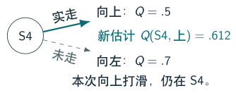
S4 处有两个分支：实走的向上（π = . 1 \pi=.1 π = .1 旧值 . 5 .5 .5 （π = . 9 \pi=.9 π = .9 旧值 . 7 .7 .7 Q ( S 4 , ↑ ) Q(\mathrm{S4},\uparrow) Q ( S4 , ↑ ) . 5 + . 112 = . 612 .5+.112=.612 .5 + .112 = .612
不同意见 重要性比率的乘积在多步时方差随步数增长，截断比率能控制方差，却引入偏差。树回退不用比率；但若目标策略接近确定性而行为策略常探索，实走分支的权重会逐步变小，多步信息几乎传不回来。Sarsa(λ \lambda λ σ \sigma σ
本章从一个问题出发：自举之前沿实际轨迹看多远。n n n n n n γ n V ( S t + n ) \gamma^nV(S_{t+n}) γ n V ( S t + n ) λ \lambda λ ( 1 − λ ) λ n − 1 (1-\lambda)\lambda^{n-1} ( 1 − λ ) λ n − 1 λ = 0 \lambda=0 λ = 0 λ = 1 \lambda=1 λ = 1 λ \lambda λ δ \delta δ
G t λ − V ( S t ) = ∑ j ≥ 0 ( γ λ ) j δ t + j , δ k = R k + 1 + γ V ( S k + 1 ) − V ( S k ) . G_t^\lambda-V(S_t)=\sum_{j\ge0}(\gamma\lambda)^j\,\delta_{t+j},\qquad \delta_k=R_{k+1}+\gamma V(S_{k+1})-V(S_k). G t λ − V ( S t ) = j ≥ 0 ∑ ( γλ ) j δ t + j , δ k = R k + 1 + γV ( S k + 1 ) − V ( S k ) .
前向视角按访问求这个和，要等后来的经验；资格迹按误差到达的次序求同一个和，把每个新到的 δ t \delta_t δ t n n n n n n n n n λ \lambda λ
目标 n n n λ \lambda λ γ \gamma γ n n n γ n \gamma^n γ n λ \lambda λ c λ = ( 1 − λ ) γ 1 − γ λ c_\lambda=\frac{(1-\lambda)\gamma}{1-\gamma\lambda} c λ = 1 − γλ ( 1 − λ ) γ 0 0 0 衰减 γ λ \gamma\lambda γλ k k k δ t \delta_t δ t ( γ λ ) t − k (\gamma\lambda)^{t-k} ( γλ ) t − k λ \lambda λ 累积 重复访问时迹怎样叠加：累积迹逐次相加，替换迹重置为 1 1 1 λ \lambda λ . 6966 .6966 .6966 . 7090 .7090 .7090 . 6713 .6713 .6713 离策略校正 Sarsa(λ \lambda λ π \pi π
遗留问题 本章方法按到达顺序处理转移，不保存经验：一条转移离开 n n n 第 8 章 存下经验或学一个模型，在两次真实行动之间反复更新。另外，本章都按表格保存价值，每个状态一个数；参数共享与参数上的迹在第 9 章 （9.6 节）展开。
不同意见 不保存经验也可以看成优点：不存经验、不学模型，每步的计算与存储都是常数，环境变化时也没有过时的模型需要纠正。经验回放与规划能多用数据，代价是存储、模型误差和数据分布漂移；在环境不断变化的持续学习设定里，哪一边更划算并无定论，第 8 章与第三部分会回到这个问题。
六种方法的两个坐标
本章的六种方法估计同一个 v π v_\pi v π c c c V ( S t ) V(S_t) V ( S t ) γ = . 9 \gamma=.9 γ = .9 λ = . 8 \lambda=.8 λ = .8 c λ = . 2 × . 9 / ( 1 − . 72 ) ≈ . 643 c_\lambda=.2\times.9/(1-.72)\approx.643 c λ = .2 × .9/ ( 1 − .72 ) ≈ .643
方法
目标
V ( S t ) V(S_t) V ( S t ) 每步存储
尾值系数 c c c
TD(0)
R t + 1 + γ V ( S t + 1 ) R_{t+1}+\gamma V(S_{t+1}) R t + 1 + γV ( S t + 1 ) t + 1 t+1 t + 1 当前转移
γ = . 9 \gamma=.9 γ = .9
n n n G t : t + n G_{t:t+n} G t : t + n t + n t+n t + n 最近 n n n
γ n \gamma^n γ n n = 2 n=2 n = 2 . 81 .81 .81 n = 3 n=3 n = 3 . 729 .729 .729
MC
G t G_t G t 终止 T T T
整条回合
0 0 0
离线 λ \lambda λ
G t λ G_t^\lambda G t λ 终止 T T T
整条回合
c λ ≈ . 643 c_\lambda\approx.643 c λ ≈ .643
累积迹 TD(λ \lambda λ
各步 δ t \delta_t δ t ( γ λ ) t − k (\gamma\lambda)^{t-k} ( γλ ) t − k k k k
每步
迹 e t \mathbf e_t e t
冻结表时与离线 λ \lambda λ
真在线 TD(λ \lambda λ
在线前向目标 G k : h λ G^\lambda_{k:h} G k : h λ
每步
e t \mathbf e_t e t v o l d v^{\rm old} v old 目标仍是 λ \lambda λ
沿横坐标从 TD(0) 走向 MC，c c c . 9 .9 .9 0 0 0 λ \lambda λ n n n n n n λ \lambda λ λ \lambda λ c λ c_\lambda c λ λ \lambda λ
不同意见 实际选算法时，计算与存储的开销、能否每步在线更新、函数逼近下是否稳定，可能比目标的形式更要紧。这张表用于对照各方法的目标，不能直接拿来选算法。
目标的深度与宽度
上表按尾值系数与写入时刻排列各方法。另一种排法固定策略 π \pi π
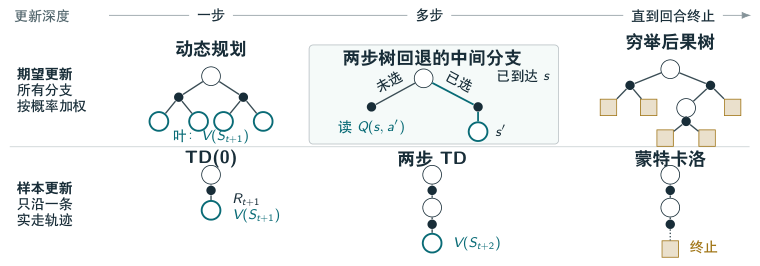
横向是更新深度（一步、多步、直到终止），纵向分两行：上行是对所有分支按概率加权的期望更新，下行是只沿一条实走轨迹的样本更新。下行依次是 TD(0)、两步 TD 与 MC，本章的 n n n λ \lambda λ
下行沿一条实走轨迹，从 TD(0) 经两步 TD 到 MC，本章的 n n n λ \lambda λ s s s π ( ⋅ ∣ s ) \pi(\cdot\mid s) π ( ⋅ ∣ s )
自测
本节给出本章留下的两项取舍、λ \lambda λ
本章有两项取舍。看多远，调节目标的偏差与方差；何时写入，决定要不要等到回合结束。
第一项是偏差与方差。从泥地 S7 出发、冻结 V ( S 4 ) = . 3 V(\mathrm{S4})=.3 V ( S4 ) = .3 G 0 λ G_0^\lambda G 0 λ
λ \lambda λ 偏差2 ^2 2
方差
均方误差
0
.0415
0
.0415
.3
.0355
.0036
.0391
.8
.0134
.0361
.0494
1
0
.0745
.0745
λ \lambda λ 0 0 0 1 1 1 c λ c_\lambda c λ γ \gamma γ 0 0 0 . 0415 .0415 .0415 0 0 0 0 0 0 . 0745 .0745 .0745 λ = . 3 \lambda=.3 λ = .3 λ \lambda λ V ( S 4 ) = . 5 V(\mathrm{S4})=.5 V ( S4 ) = .5 λ = 0 \lambda=0 λ = 0 V ( S 4 ) = 0 V(\mathrm{S4})=0 V ( S4 ) = 0 λ = 1 \lambda=1 λ = 1
第二项是等待与在线。离线 λ \lambda λ λ \lambda λ c λ c_\lambda c λ O ( ∣ S ∣ ) O(|\mathcal S|) O ( ∣ S ∣ ) O ( d ) O(d) O ( d )
同一加权和在后续各章的形式。 第 11 章的 GAE 用同一个 ∑ j ( γ λ ) j δ t + j \sum_j(\gamma\lambda)^j\delta_{t+j} ∑ j ( γλ ) j δ t + j λ \lambda λ n n n
不同意见 两对矛盾并不独立：在线写入配上大的 λ \lambda λ
已经知道的。 冻结表、固定策略时，λ \lambda λ c λ = ( 1 − λ ) γ / ( 1 − γ λ ) c_\lambda=(1-\lambda)\gamma/(1-\gamma\lambda) c λ = ( 1 − λ ) γ / ( 1 − γλ ) λ < 1 \lambda<1 λ < 1 λ = 1 \lambda=1 λ = 1 λ \lambda λ λ \lambda λ V ( S 4 ) = . 5 V(\mathrm{S4})=.5 V ( S4 ) = .5 λ = 0 \lambda=0 λ = 0 . 0006 .0006 .0006 V ( S 4 ) = . 3 V(\mathrm{S4})=.3 V ( S4 ) = .3 λ = . 3 \lambda=.3 λ = .3 . 0391 .0391 .0391 V ( S 4 ) = 0 V(\mathrm{S4})=0 V ( S4 ) = 0 λ = 1 \lambda=1 λ = 1 . 0745 .0745 .0745
已有工作。 一条路线按状态选 λ \lambda λ λ \lambda λ λ ( s ) \lambda(s) λ ( s ) λ \lambda λ γ \gamma γ λ \lambda λ
没有解决好的。 λ \lambda λ λ \lambda λ λ \lambda λ λ \lambda λ V V V λ \lambda λ
怎样检验。 在泥地固定策略预测上，比较三种 λ \lambda λ λ \lambda λ λ \lambda λ λ \lambda λ N N N λ \lambda λ
迹往哪里走课件
迹在后面各章换了样子：记在哪里随表示而变，乘什么随数据来源而变。按表示方式（表格、线性、网络）与数据来源（同策略、离策略）分成六格：
表格
线性
网络
同策略 TD(λ \lambda λ λ \lambda λ λ \lambda λ
半梯度 TD(λ \lambda λ λ \lambda λ 第 9 章 （9.6）；真在线 TD 与 Dutch 迹的推导：第 17 章 （17.3）
GAE：第 11 章 ；Stream AC(λ \lambda λ
离策略 比率修正的多步 Sarsa、树回退：第 7 章（7.5）；截断迹 Retrace：第 17 章（17.4）
GTD2、TDC、ETD(0)：第 9 章（9.5）给结果，第 17 章（17.4）推导；带迹的 GTD(λ \lambda λ λ \lambda λ
QRC(λ \lambda λ 第 12 章 （12.5）；Stream Q(λ \lambda λ
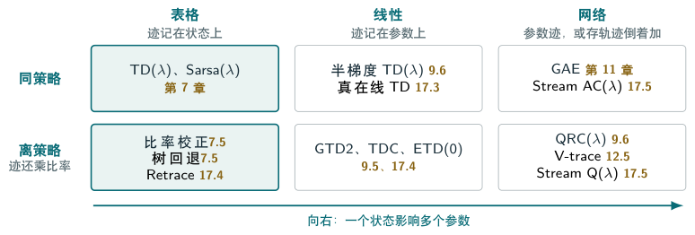
两行是同策略与离策略，三列是表格、线性与网络；每格写出该处的代表方法与所在章节。
向右，迹记录的对象变了。表格中迹是每个状态一个数；线性时一个状态对应一个特征向量，迹变成每个参数一个数，访问时加上 x ( S t ) \mathbf x(S_t) x ( S t ) ∇ w v ^ ( S t ) \nabla_{\mathbf w}\hat v(S_t) ∇ w v ^ ( S t ) ∑ j ( γ λ ) j δ t + j \sum_j(\gamma\lambda)^j\delta_{t+j} ∑ j ( γλ ) j δ t + j λ \lambda λ λ \lambda λ
向下，迹还要处理行为策略与目标策略的差别。重要性比率的连乘使方差随步数增长，各种离策略方法的分别主要在于怎样截断：树回退不用比率，只按目标策略的概率给未走的分支加权；Retrace 把比率截到不超过 1 再乘 λ \lambda λ
本章的三个旋钮在每一格都在：γ λ \gamma\lambda γλ
不同意见 有人认为在深度强化学习中资格迹已不重要：主流方法使用经验回放。回放打乱了转移顺序，后向的迹无法使用，所以改用 n n n
补充阅读：权重矩阵与一回合的三种更新课件
7.3 节说明前向视角与后向视角求的是同一个和。把这个和摊成一个矩阵，两种求和次序的关系最容易看清。仍用胶片回合 S 7 → S 4 → S 4 → S 4 → G \mathrm{S7}\to\mathrm{S4}\to\mathrm{S4}\to\mathrm{S4}\to G S7 → S4 → S4 → S4 → G V ( S 7 ) = . 4 V(\mathrm{S7})=.4 V ( S7 ) = .4 V ( S 4 ) = . 5 V(\mathrm{S4})=.5 V ( S4 ) = .5 γ λ = . 72 \gamma\lambda=.72 γλ = .72 k k k δ t \delta_t δ t ( γ λ ) t − k (\gamma\lambda)^{t-k} ( γλ ) t − k t < k t<k t < k
前向视角沿行求和。第一行是 S7 的那次访问，它把此后的四个误差加权相加：
G 0 λ − V ( S 0 ) = δ 0 + . 72 δ 1 + . 7 2 2 δ 2 + . 7 2 3 δ 3 = . 05 − . 036 − . 0259 + . 1866 = . 1747. G_0^\lambda-V(S_0)=\delta_0+.72\,\delta_1+.72^2\,\delta_2+.72^3\,\delta_3=.05-.036-.0259+.1866=.1747. G 0 λ − V ( S 0 ) = δ 0 + .72 δ 1 + .7 2 2 δ 2 + .7 2 3 δ 3 = .05 − .036 − .0259 + .1866 = .1747.
后向视角沿列求和。最后一列把终点误差 δ 3 = . 5 \delta_3=.5 δ 3 = .5 . 7 2 3 , . 7 2 2 , . 72 , 1 .72^3,\ .72^2,\ .72,\ 1 .7 2 3 , .7 2 2 , .72 , 1 1 + . 72 + . 5184 = 2.2384 1+.72+.5184=2.2384 1 + .72 + .5184 = 2.2384
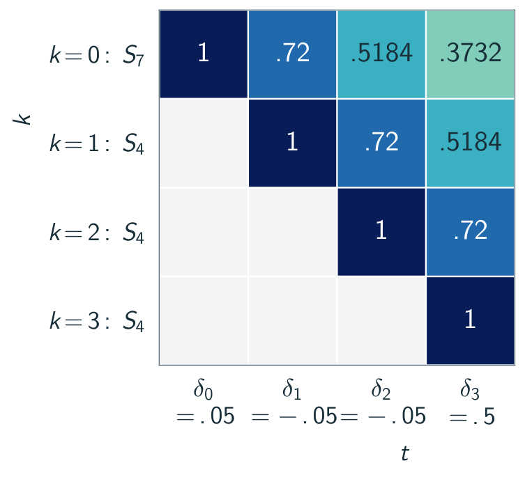
行是四次访问（k = 0 k=0 k = 0 为 S7，k = 1 k=1 k = 1 3 3 3 k k k δ t \delta_t δ t . 7 2 t − k .72^{t-k} .7 2 t − k t < k t<k t < k 2.2384 2.2384 2.2384
一回合后的三种更新
7.3 节“离线等价”一小节的表给出了 TD(0)、TD(. 8 .8 .8 1 1 1 V ( S 7 ) = . 4 V(\mathrm{S7})=.4 V ( S7 ) = .4 V ( S 4 ) = . 5 V(\mathrm{S4})=.5 V ( S4 ) = .5 δ 0..3 = . 05 , − . 05 , − . 05 , . 5 \delta_{0..3}=.05,\,-.05,\,-.05,\,.5 δ 0..3 = .05 , − .05 , − .05 , .5 α = . 2 \alpha=.2 α = .2 γ = . 9 \gamma=.9 γ = .9 λ = . 8 \lambda=.8 λ = .8
TD(0)
TD(. 8 .8 .8 α ∑ k [ G k λ − V ( S k ) ] \alpha\sum_k[G_k^\lambda-V(S_k)] α ∑ k [ G k λ − V ( S k )]
MC（每次访问）
S7 增量
. 2 ( . 05 ) = . 01 .2(.05)=.01 .2 ( .05 ) = .01 . 2 ( . 1747 ) = . 0349 .2(.1747)=.0349 .2 ( .1747 ) = .0349 . 2 ( . 729 − . 4 ) = . 0658 .2(.729-.4)=.0658 .2 ( .729 − .4 ) = .0658
S4 增量
. 2 ( − . 05 − . 05 + . 5 ) = . 08 .2(-.05-.05+.5)=.08 .2 ( − .05 − .05 + .5 ) = .08 . 2 ( . 1732 + . 31 + . 5 ) = . 1966 .2(.1732+.31+.5)=.1966 .2 ( .1732 + .31 + .5 ) = .1966 . 2 ( . 31 + . 4 + . 5 ) = . 242 .2(.31+.4+.5)=.242 .2 ( .31 + .4 + .5 ) = .242
回合末 S7 / S4
. 41 .41 .41 . 58 .58 .58 . 4349 .4349 .4349 . 6966 .6966 .6966 . 4658 .4658 .4658 . 742 .742 .742
TD(0) 的每次访问只用它自己那一步的误差。S7 只访问一次，增量是 . 2 × . 05 .2\times.05 .2 × .05 δ 1 , δ 2 , δ 3 \delta_1,\delta_2,\delta_3 δ 1 , δ 2 , δ 3
TD(. 8 .8 .8 k k k G k λ − V ( S k ) = ∑ j . 7 2 j δ k + j G_k^\lambda-V(S_k)=\sum_j .72^j\delta_{k+j} G k λ − V ( S k ) = ∑ j .7 2 j δ k + j k = 3 k=3 k = 3 . 5 .5 .5 k = 2 k=2 k = 2 − . 05 + . 72 ( . 5 ) = . 31 -.05+.72(.5)=.31 − .05 + .72 ( .5 ) = .31 k = 1 k=1 k = 1 − . 05 + . 72 ( . 31 ) = . 1732 -.05+.72(.31)=.1732 − .05 + .72 ( .31 ) = .1732 k = 0 k=0 k = 0 . 05 + . 72 ( . 1732 ) = . 1747 .05+.72(.1732)=.1747 .05 + .72 ( .1732 ) = .1747 . 2 × . 1747 .2\times.1747 .2 × .1747 . 2 .2 .2
MC 的每次访问用实得回报减旧值。S7 的回报是 . 9 3 = . 729 .9^3=.729 . 9 3 = .729 . 81 , . 9 , 1 .81,\ .9,\ 1 .81 , .9 , 1 . 5 .5 .5 . 31 , . 4 , . 5 .31,\ .4,\ .5 .31 , .4 , .5
三列的差别在于用到了哪些误差。TD(0) 给 S7 的增量只含 δ 0 \delta_0 δ 0 . 8 .8 .8 . 7 2 3 .72^3 .7 2 3 λ = 1 \lambda=1 λ = 1 γ j \gamma^j γ j . 05 − . 045 − . 0405 + . 3645 = . 329 = . 729 − . 4 .05-.045-.0405+.3645=.329=.729-.4 .05 − .045 − .0405 + .3645 = .329 = .729 − .4 v π ( S 7 ) = . 4737 v_\pi(\mathrm{S7})=.4737 v π ( S7 ) = .4737 . 1 .1 .1 . 5263 .5263 .5263
补充阅读：突触标记与三因子规则课件
本节讨论资格迹在神经科学中的对应物，不影响本章其余内容的阅读。
突触标记与资格迹
资格迹在本章一直是一个算法上的记账办法：每个状态记一个数，访问时加一，每步乘 γ λ \gamma\lambda γλ
一种解释是突触标记。前、后放电配对时，权重并不立即改变，突触上只留下一个会衰减的化学记号，即标记。之后若有多巴胺到来，权重的变化等于标记乘多巴胺；多巴胺来得及时，标记还高，突触增强；来得太晚，标记已近于零，权重不变。Izhikevich 的模型正是这样写的：放电配对只改变一个衰减的变量 c c c d d d s s s s ˙ = c d \dot s=c\,d s ˙ = c d
这个解释有实验支持。Yagishita 等（2014）在小鼠纹状体的神经元上，用光分别刺激谷氨酸输入与多巴胺输入。按其摘要，多巴胺只有在谷氨酸输入之后 0.3 至 2 秒之内到达，才促进树突棘增大；这一时间检测依靠细小远端树突中 cAMP 与蛋白激酶 A 的快速调节。多巴胺提前 1 秒到达时，树突棘只略有增大。实验直接支持的是这个延迟时窗；先升后降的衰减标记是解释这一时窗的模型。下面的对应只说明两者的结构相同，不证明大脑在执行 TD 算法。
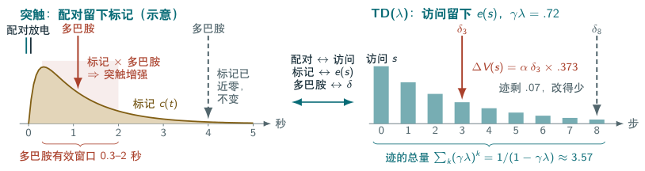
左图是一个突触：零秒时前、后神经元配对放电，突触上留下先升后降的标记（金色，示意曲线）；多巴胺在 1 秒时到来，标记仍高，突触增强；在 4 秒时到来，标记已近零，权重不变。中栏列出对应关系：配对对应访问，标记对应 e ( s ) e(s) e ( s ) δ \delta δ λ \lambda λ s s s e ( s ) e(s) e ( s ) γ λ = . 72 \gamma\lambda=.72 γλ = .72 . 373 .373 .373 V ( s ) V(s) V ( s ) . 07 .07 .07
TD(λ \lambda λ s s s e ( s ) = 1 e(s)=1 e ( s ) = 1 γ λ \gamma\lambda γλ γ λ = . 72 \gamma\lambda=.72 γλ = .72 γ = . 9 \gamma=.9 γ = .9 λ = . 8 \lambda=.8 λ = .8 δ 3 \delta_3 δ 3 V ( s ) V(s) V ( s ) α δ 3 × . 7 2 3 ≈ . 373 α δ 3 \alpha\delta_3\times.72^3\approx.373\,\alpha\delta_3 α δ 3 × .7 2 3 ≈ .373 α δ 3 . 7 2 8 ≈ . 07 .72^8\approx.07 .7 2 8 ≈ .07 ∑ k ( γ λ ) k = 1 / ( 1 − γ λ ) ≈ 3.57 \sum_k(\gamma\lambda)^k=1/(1-\gamma\lambda)\approx3.57 ∑ k ( γλ ) k = 1/ ( 1 − γλ ) ≈ 3.57 e ( s ) e(s) e ( s ) δ \delta δ
这条线索比算法还早。Klopf（1982）在《享乐神经元》中设想，单个神经元调整自身突触的效能，使被当作奖励的突触输入与被当作惩罚的突触输入之差最大；他还提出，参与促成一次放电的突触随后变为“可修改的”（eligible），若在适当时间内奖励增加，这些突触的效能增强。Sutton 与 Barto §15.9 讨论了这个设想。
不同意见 有人认为这只是表面相似：Yagishita 的时间窗来自一种细胞、一种脑区、一种结构可塑性，不能推广为大脑使用资格迹；TD(λ \lambda λ
三因子规则课件
Gerstner 等（2018）把这类规则称为三因子学习规则。记突触 j → i j\to i j → i x j , y i x_j,y_i x j , y i e i j e_{ij} e ij M ( t ) M(t) M ( t )
e ˙ i j = η f ( x j ) g ( y i ) − e i j τ e , w ˙ i j = e i j M ( t ) . \dot e_{ij}=\eta\,f(x_j)\,g(y_i)-\frac{e_{ij}}{\tau_e},\qquad \dot w_{ij}=e_{ij}\,M(t). e ˙ ij = η f ( x j ) g ( y i ) − τ e e ij , w ˙ ij = e ij M ( t ) .
前两个因子同时出现时只让迹增加，迹按时间常数 τ e \tau_e τ e τ e \tau_e τ e （1 / e 1/e 1/ e 权重的变化率是迹乘第三因子。学习率放在哪一个式子里不影响结果。表格 TD(λ \lambda λ
三因子规则
TD(λ \lambda λ
留下迹
前、后活动同时出现：f ( x j ) g ( y i ) f(x_j)g(y_i) f ( x j ) g ( y i )
访问 s s s 1 { S t = s } \mathbf 1\{S_t=s\} 1 { S t = s }
迹
连续衰减，e − Δ t / τ e e^{-\Delta t/\tau_e} e − Δ t / τ e
e t ( s ) = γ λ e t − 1 ( s ) + 1 { S t = s } e_t(s)=\gamma\lambda e_{t-1}(s)+\mathbf 1\{S_t=s\} e t ( s ) = γλ e t − 1 ( s ) + 1 { S t = s }
第三因子
调制信号 M ( t ) M(t) M ( t )
TD 误差 δ t \delta_t δ t
改权重
w ˙ i j = e i j M ( t ) \dot w_{ij}=e_{ij}M(t) w ˙ ij = e ij M ( t ) Δ V ( s ) = α δ t e t ( s ) \Delta V(s)=\alpha\,\delta_t\,e_t(s) Δ V ( s ) = α δ t e t ( s )
迹的个数
每个突触一条
每个状态一条
两边都把改动对象与改动的幅度和方向分开：前者由本地的迹回答，后者由晚到的信号回答。迹单独存在时权重不变；信号为负时方向反过来。一份调制信号同时到达一个神经元的所有突触，改动按各自的迹分配；TD(λ \lambda λ δ t \delta_t δ t e ( s ) e(s) e ( s )
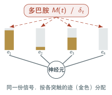
上方的调制信号 M ( t ) M(t) M ( t ) δ t \delta_t δ t e 1 e_1 e 1 e 4 e_4 e 4
对应在三处不成立。
第一，价值学习的迹缺少突触后活动这一因子。表格迹只记录访问了哪个状态，线性时是特征 x ( S t ) \mathbf x(S_t) x ( S t ) 第 11 章 行动者的迹，它累加 ∇ log π ( A t ∣ S t ) \nabla\log\pi(A_t\mid S_t) ∇ log π ( A t ∣ S t )
第二，时间尺度。实验中生物迹在秒的量级上衰减，时间常数由分子过程决定，不随任务调整；γ λ \gamma\lambda γλ
第三，信号。δ t \delta_t δ t 第 9 章 线性 TD 的参数迹，每个权重一条。
不同意见 Gerstner 等指出，离散时间的 TD 算法本身不需要超过一步的迹，较长的迹只是加速学习的辅助手段；照此看法，用生物的迹对应 e ( s ) e(s) e ( s ) λ = 0 \lambda=0 λ = 0 λ \lambda λ
延伸阅读
Sutton 与 Barto，《Reinforcement Learning: An Introduction》第 2 版（2018），第 7 章：n n n n n n
同书第 12 章：从 λ \lambda λ λ \lambda λ λ \lambda λ λ \lambda λ
Sutton（1988），“Learning to predict by the methods of temporal differences”，Machine Learning：TD(λ \lambda λ
Singh 与 Sutton（1996），“Reinforcement learning with replacing eligibility traces”，Machine Learning：比较累积迹与替换迹，解释重复访问时累积迹的问题。
van Seijen 与 Sutton（2014），“True online TD(λ \lambda λ λ \lambda λ
Precup、Sutton 与 Singh（2000），“Eligibility traces for off-policy policy evaluation”，ICML：用资格迹实现重要性采样与树回退等离策略评估方法。
Munos、Stepleton、Harutyunyan 与 Bellemare（2016），“Safe and efficient off-policy reinforcement learning”，NeurIPS：提出 Retrace(λ \lambda λ
White 与 White（2016），“A greedy approach to adapting the trace parameter for temporal difference learning”，AAMAS：按状态估计回报方差，贪心地选 λ ( s ) \lambda(s) λ ( s )
Xu、van Hasselt 与 Silver（2018），“Meta-gradient reinforcement learning”，NeurIPS：把 γ \gamma γ λ \lambda λ
Gerstner 等（2018），“Eligibility traces and plasticity on behavioral time scales: experimental support of neoHebbian three-factor learning rules”，Frontiers in Neural Circuits：综述三因子规则及其实验证据，是本章神经科学补充阅读的主要依据。
练习
前四题都用同一条回合：S 7 → S 4 → S 4 → S 4 → \mathrm{S7}\to\mathrm{S4}\to\mathrm{S4}\to\mathrm{S4}\to S7 → S4 → S4 → S4 → 0 0 0 1 1 1 γ = . 9 \gamma=.9 γ = .9 V ( S 7 ) = . 4 , V ( S 4 ) = . 5 V(\mathrm{S7})=.4,\ V(\mathrm{S4})=.5 V ( S7 ) = .4 , V ( S4 ) = .5
求 G 0 : 1 , G 0 : 2 , G 0 : 3 G_{0:1},G_{0:2},G_{0:3} G 0 : 1 , G 0 : 2 , G 0 : 3 G 0 G_0 G 0 λ = . 5 \lambda=.5 λ = .5 G 0 λ G_0^\lambda G 0 λ n n n G 0 G_0 G 0 λ 3 \lambda^{3} λ 3 G 0 G_0 G 0 核对： . 45 , . 405 , . 3645 , . 729 .45,\ .405,\ .3645,\ .729 .45 , .405 , .3645 , .729 G 0 . 5 = . 5 ( . 45 + . 5 × . 405 + . 25 × . 3645 ) + . 125 × . 729 = . 4629375 G_0^{.5}=.5(.45+.5\times.405+.25\times.3645)+.125\times.729=.4629375 G 0 .5 = .5 ( .45 + .5 × .405 + .25 × .3645 ) + .125 × .729 = .4629375
取 λ = . 5 \lambda=.5 λ = .5 （t = 3 t=3 t = 3 的累积迹、替换迹，以及 α = 1 \alpha=1 α = 1 e ← ( 1 − α ) γ λ e + 1 e\leftarrow(1-\alpha)\gamma\lambda e+1 e ← ( 1 − α ) γλ e + 1 核对： 累积迹 1 + . 45 + . 4 5 2 = 1.6525 1+.45+.45^2=1.6525 1 + .45 + .4 5 2 = 1.6525 1 1 1 1 1 1 1 − α = 0 1-\alpha=0 1 − α = 0 α = 1 \alpha=1 α = 1
用补充阅读中的权重矩阵，按行求和算出 S4 第一次访问（k = 1 k=1 k = 1 的 G 1 λ − V ( S 1 ) G_1^\lambda-V(S_1) G 1 λ − V ( S 1 ) λ = . 8 \lambda=.8 λ = .8 δ 2 \delta_2 δ 2 核对： 行和 − . 05 + . 72 ( − . 05 ) + . 7 2 2 ( . 5 ) = . 1732 -.05+.72(-.05)+.72^2(.5)=.1732 − .05 + .72 ( − .05 ) + .7 2 2 ( .5 ) = .1732 . 7 2 2 = . 5184 .72^2=.5184 .7 2 2 = .5184 . 72 + 1 = 1.72 .72+1=1.72 .72 + 1 = 1.72
在线 TD(λ \lambda λ λ \lambda λ 核对： 在线改表后各 δ t \delta_t δ t λ \lambda λ λ \lambda λ
沿用 7.5 节的两步树回退算例：Q ( S 4 , ↑ ) = . 5 , Q ( S 4 , ← ) = . 7 Q(\mathrm{S4},\uparrow)=.5,\ Q(\mathrm{S4},\leftarrow)=.7 Q ( S4 , ↑ ) = .5 , Q ( S4 , ← ) = .7 π = ( . 1 , . 9 ) \pi=(.1,.9) π = ( .1 , .9 ) b ( ↑ ∣ S 4 ) = . 05 b(\uparrow\mid\mathrm{S4})=.05 b ( ↑∣ S4 ) = .05 R 1 = R 2 = 0 R_1=R_2=0 R 1 = R 2 = 0 S 2 = S 4 S_2=\mathrm{S4} S 2 = S4 核对： D = . 112 D=.112 D = .112 . 9 ( . 68 + . 1 × . 112 ) = . 62208 .9(.68+.1\times.112)=.62208 .9 ( .68 + .1 × .112 ) = .62208 . 9 ( . 68 + 2 × . 112 ) = . 8136 .9(.68+2\times.112)=.8136 .9 ( .68 + 2 × .112 ) = .8136 ρ 1 = 2 \rho_1=2 ρ 1 = 2 b b b
实现与参考资料
Sutton 与 Barto 第 2 版第 7 章讨论多步目标，第 12 章从前向回报引出资格迹。Silver 第 4 讲用图对照两个视角，Machado 的课程进一步比较路径校正与树回退。教材 · Silver 第 4 讲 · Machado CMPUT 655
本章数字的程序与数据见附录：复现材料，第 7 章 。